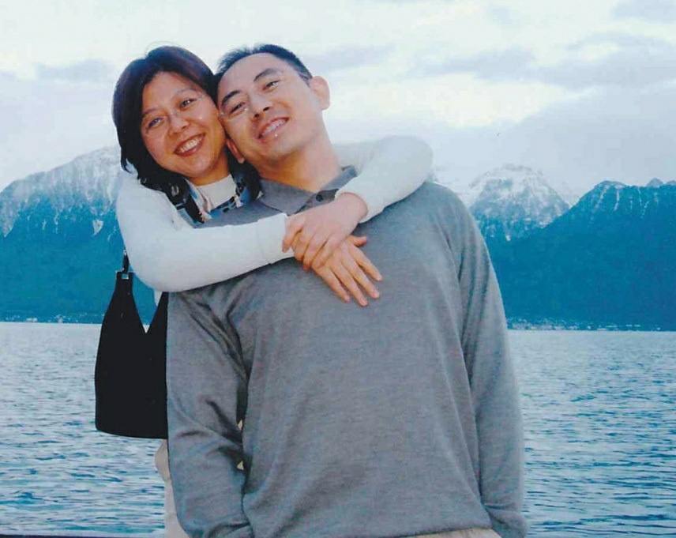
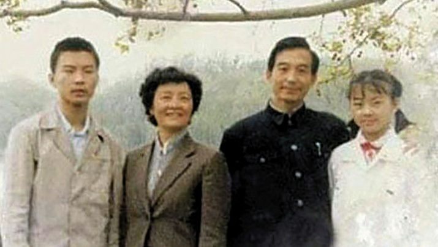
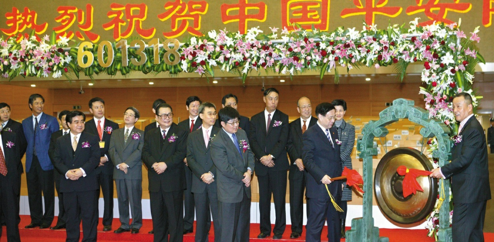
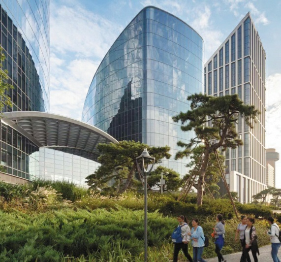
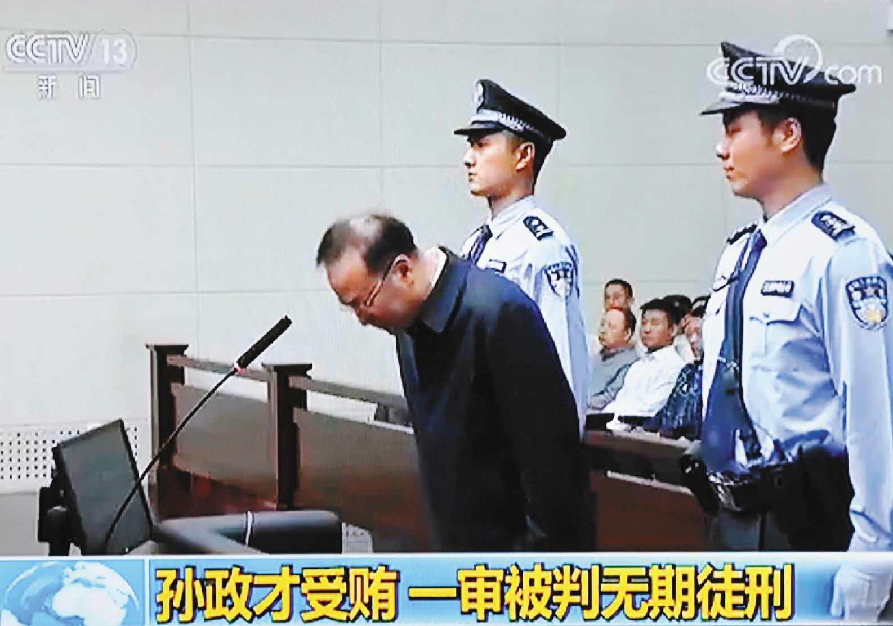
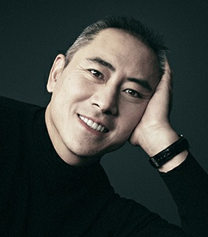

李伯潭告诉我，他锁定了该公司每年发布的三分之一的十年期茅台
酒。在中国销售的大多数陈年茅台酒几乎不含一滴真正的老酒。大卫有
机会接触到真正的东西。
茅台酒是中国的国酒。每个有身份的人都会买一些特殊年份的酒来炫
耀。人民解放军、国务院和警察都有一个年份的酒。一些酒的价格为
125,000美元或更高。茅台酒鉴赏家们的姿态让人想起美酒爱好者们所
表现出的那种势利和独占欲。"你拿82年的拉菲，我就拿69年的反击"。
这与茅台酒没有什么不同。
李伯潭把他的十年陈酿的茅台酒装在红瓶子里出售。我们称它们为
"红毛"，或红毛，是对 "茅台 "一词的戏称。我们圈子里的人从来不碰
正规商店的茅台酒。中国的造假行业什么都造假，尤其是茅台。中国的
造假者非常善于将仿制的茅台装瓶，以至于正常的中国人都会去海外购
买茅台酒，认为外国商店可以信赖地储存真酒。
那些想获得李伯潭珍贵的 "红毛"的人必须加入茅台俱乐部。入会费
用高达数万美元。但是，就像获得北京的车牌需要巧妙地利用关系一
样，光有钱也不能保证在茅台酒俱乐部中占有一席之地。李伯潭必须对
你进行审查，鉴于申请人必须是重要人物，会员资格很快就成为北京最
抢手的职位之一。中国的一些顶级富豪是董事会成员。刘长乐是凤凰卫
视的董事长，这是一个设在香港的技术性私营媒体帝国，主要进行亲北
京的宣传。还有中国最大的国有企业--中信集团的董事长孔丹，以及科
技巨头阿里巴巴的创始人马云。有一次我走进俱乐部，遇到一个面容清
秀的男孩，他自我介绍说叫阿尔文。后来我才知道，他是江泽民的孙子
阿尔文。阿尔文在20多岁时就创立了一家价值10亿美元的私募股权企
业。
在经营俱乐部18个月后，李伯潭向我提出了创建一个葡萄酒俱乐部的
想法。段伟红总是对与权力打交道感兴趣，鼓励我培养李伯潭。段伟红
和我同意成为葡萄酒俱乐部计划中的天使投资者。我与李伯潭分享了我
对葡萄酒的知识。大多数时候，我只是给他涂上黄油。李伯潭会对某个
特定年份的葡萄酒大加赞赏。不管它的质量如何，当大卫称赞它的酒
体、单宁和风土时，我都会像个摇头娃娃一样点头。
李伯潭和我开始为葡萄酒俱乐部寻找一个地点。有一天，我们在北京
的北海公园散步，该公园位于中南海北门对面，是中国共产党的总部。
我们正在考虑 "借用 "公园里的一座建筑的想法，并四处打探，看看它
是否适合翻新。这又是一个将国有资产重新用于私人用途的例子。
当我们绕过设施时，李伯潭注意到有人大步向我们走来。他戴着线框
眼镜，穿着深蓝色的西装，没有打领带，有一种中国官员的感觉。"我
的上帝，"李伯潭在那人走近时说。"这是孟部长。"孟建柱是公安部部
长，是中国的最高警察，他是出来吃完饭后散步的。我们像两个小学生
一样逃离了现场。"这里没有葡萄酒俱乐部，"大卫在我们匆忙离开时嘟
囔道。没有人想和孟部长打交道。
我把我的管理团队借给了李伯潭，这样他就可以起草一份商业计划。
像许多红色贵族一样，他没有一个好的员工。他并不真正需要一个。他
利用关系来获得内部交易的机会，或兜售他因其身份而获得的东西，从
而赚到钱。他利用贾庆林获得茅台酒，他有一个有保障的市场。有一段
时间，李伯潭的投资公司最大的资产是友谊商店大楼，这是北京东边建
国门外大街上的一个地标。有传言说，李伯潭是在他的岳父的安排下获
得该建筑的，他安排原主人出狱。出狱后，该商人将该建筑转让给了李
伯潭。李伯潭的公司还赢得了在北京周围无处不在的公共汽车站出售广
告的独家合同。这是一个印钱的许可证。后来，李伯潭将投资于电动车
技术，在一家名为Canoo的美国公司中分得一杯羹。
虽然李伯潭不是红色贵族出身，但他嫁入了贵族阶层，并采用了其中
的一些怪癖。他把浓密的咸椒色头发剪成平头，这是对党的军事根基的
回顾。当你进入他的办公室时，他会给你茶和雪茄。雪茄必须是古巴产
的，以示对世界革命的嘲讽。茶总是来自云南的陈年普洱，以反映他渴
望的文化真实性。在室内，李伯潭穿着黑色棉拖鞋，白色鞋底和白色袜
子，反映了老北京胡同里的男人的传统。这双时髦的鞋含有一个问题。
解码后，它说。"我们的祖先在古代中国穿这种鞋。你们的呢？"
2011年春天，段伟红建议我们带李伯潭和他的妻子贾强去欧洲，给他
们上一堂葡萄酒的速成课。他喜欢这个主意，并邀请了另外两个潜在的
葡萄酒俱乐部投资者和他们的妻子一起去。第一个是中国最大的房地产
开发商恒大集团的首席执行官许家印，他的儿子在我安排的家庭财富研
讨会上打瞌睡。第二位是俞国祥，一个满口脏话的建筑公司大亨，绰号
小宁波，因为他既矮又来自上海南部的港口城市宁波。我们都在考虑每
人投资500万美元来建立俱乐部的葡萄酒收藏，并让俱乐部运作起来。
我不知道李伯潭和他的妻子Jia Qiang以前是否去过欧洲，但他的女
儿Jasmine肯定去过。2009年11月，Jasmine身着Carolina Herrera的落
地长裙，在巴黎H?tel de Crillon的年度名媛舞会上大出风头。这名新
面孔的照片登上了《巴黎时尚》。Jasmine后来在斯坦福大学上学，然
后在巴拿马文件中被确认为两个离岸投资实体的唯一股东，这些实体在
英属维尔京群岛注册，专门从事投资和咨询。看上去苹果并没有从贾庆
林的树上掉下来。
我们在欧洲旅行的第一件事是交通。这时，段伟红已经习惯了乘坐私
人飞机，她和我已经加入了购买价值4300万美元的湾流G500的等候名
单。我们建议使用喷气机。李伯潭同意了，但补充说，为了方便起见，
也许我们应该乘坐三架。2011年6月，我们四对夫妇启程前往巴黎。
我们原计划乘坐三架喷气式飞机，但在最后一分钟，其他人决定要打
牌。我们仍然乘坐另外两架喷气式飞机；他们只是空着跟着。面子在这
里起了作用。"如果你有一架私人飞机，那么，我也得有一架。"另外，
作为中国人，你永远不知道，也许会出现一个商业机会，我们中的一个
人必须提前赶回去达成交易。
在船上，当我们的妻子聊天和品尝寿司时，我们玩起了斗地主，这是
一种流行的中国纸牌游戏，起源于50年代初中国共产党的残酷土地改革
运动。通过多轮竞价，谁先出完所有的牌并 "杀死地主"，谁就赢了。
我对这种赌注感到惊讶。我不是一个有成就的赌徒，我是一个不情愿的
参与者。我在那条腿上丢了10万美元。我感到很尴尬，而不是担心。把
钱输给这样的人，实际上可能会对生意有好处。谁不欢迎心甘情愿的傻
瓜？我知道他们总是会邀请我回来，为我提供一个加深个人联系的机
会。
在牌桌上，谈话转向了商业。俞国祥显然以前曾多次与法律打过交
道。据报道，他曾 "借给 "一位浙江省官员50万美元，以赢得一份价值
12亿美元的合同，在杭州市周边修建一条高速公路。该官员最终因腐败
被判处终身监禁。已发表的报告和美国外交电报还将俞国祥与2003年上
海国家管理的养老基金的一笔可疑贷款联系起来，这笔贷款使他能够以
1.5亿美元购买上海静安希尔顿酒店。
为俞国祥和他的违法行为干杯，李伯潭宣称，"在今天的中国，监狱
是现代版的黄埔军校。一个没有进过监狱的中国商人是没有成就的"。
对我来说，这是一个相当惊人的说法。黄埔军校曾是中国版的西点军
校，一个神圣的机构，中国第一代现代军官在20世纪20年代和30年代在
这里接受培训。将一个商人所服的刑期与一个爱国的中国学员所完成的
军事教育相提并论是一种亵渎。你会认为，在这些圈子里，服刑是一个
黑点，黄埔军校会受到尊敬。但是，中国第四大政客的女婿却在这里崇
尚刑事监禁。其他人都郑重其事地点头同意，碰杯，并喝下一壶克鲁格
香槟酒。虽然我对李伯潭的厚颜无耻感到相当惊讶，但我并不特别担
心。段伟红和我在我们的交易中一直很小心，保持在法律的范围内。
段伟红指示我为这群人表演节目，一旦我们降落在第一站法国，节目
就开始了。2011年6月10日晚，我在Pavillon
Ledoyen组织了一次晚
餐，这是巴黎最古老的餐厅之一，位于香榭丽舍大街以东的花园中。我
告诉我的客人，在这里，在这个城市繁华的第八区，是拿破仑第一次见
到约瑟芬的地方，也是决斗者在附近的布洛涅森林中互相射击后，来这
里用宴会来埋葬仇恨的地方。
餐厅的三面都是修剪整齐的场地，透过挂着白色窗帘的宽大窗户向外
看。桌子上闪烁着白色桌布和银色餐具的光芒。当晚的客人包括几对法
国夫妇、沙特王子、德国实业家、一桌日本商人和一些衣着不整的美国
人。我们被领进了一个包间。厨师Christian Le Squer在烹饪界享有盛
名，他从为拖网渔船上的甲板工人提供快餐到成为米其林星级厨师，一
路走来。
我邀请了一位法国朋友Fran?ois，他拥有法国最大的1960年以前的葡
萄酒私人收藏之一，在一个嗜酒如命的国家，这可不是一件容易的事。
我请Fran?ois和Le Squer大厨一起策划这顿饭，因为我想向我的朋友们
展示法国人是如何精细地对待他们的葡萄酒，以及他们在美食体验方面
的用心。中国的共产主义革命打破了我们与帝国中国著名的工艺和鉴赏
力之间的联系。这是我让我的旅伴们接触到传统之美和一些真正的好酒
的方式。
除了三瓶香槟和一瓶来自罗斯柴尔德家族的私人收藏，Fran?ois设计
了一个垂直品酒会，品尝六个年份的拉菲，都是大瓶的，从1900年开
始，然后是22年，48年，61年，71年，和1990年。厨师Le Squer将这些
酒与烤乌鱼、红烧多宝鱼、春羊肉和烟熏鳗鱼吐司搭配在一起，最后配
上柑橘雪糕。光是这些酒就超过了100,000美元，我们吃喝了几个小
时。是的，这是显眼的消费，但对段伟红和我来说，这是有目的的显
眼。
在中国，政治是致富的关键，而不是相反，而李伯潭在政治上与这个
系统有联系。段伟红和我在那里建立了一个联系。段伟红总是需要在她
的棋盘上再加一个棋子。段伟红和我都对李伯潭的妻子贾强感到惊喜。
尽管她有党的血统，但她很随和，很平易近人。
段伟红专注于擦亮我们的个人品牌，以及完善我们作为一对夫妇如何
在人群中脱颖而出。她扮演的角色是一个能够接触到东方的女人，是中
国学问的缩影。我扮演的是一个可以进入西方及其生活方式的男人的角
色。在欧洲，我为我们小组打开了通常会被锁住的门。为了突出我对中
国以外世界的了解，我策划了旅行的每一步。为什么住在这里而不是那
里？为什么在这里吃饭，在那里购物？为什么要喝这个而不是那个？我
有答案。从这个角度来看，晚上的价格是表演的一部分。
在巴黎之后，我们去了波尔多，参观属于罗斯柴尔德家族的一个庄
园。我在参与我的家族遗产项目时，在早期的欧洲旅行中已经认识了罗
斯柴尔德家族的这个分支。在这个庄园里，七十岁的埃里克-罗斯柴尔
德，这个在纽约出生的家族子弟，和他的妻子玛丽亚-贝特丽丝，招待
我们吃了一顿饭。银行家、葡萄酒商、慈善家，埃里克是个多才多艺的
人。那天，埃里克穿了一套精心裁剪的西装，显然很受人喜爱，上面点
缀着补丁，不仅仅是在肘部。我的同伴们都感到惊讶。又是一个教学时
刻。我对我的同伴们说，这是旧时代的风格。在过去，这是一套量身定
做的西装。它的年头越来越长了，但埃里克不愿意放弃它，对它进行了
精心的处理。对于一群略显庸俗的中国新贵来说，这套西装的故事是一
个学习如何珍惜我们拥有的东西的机会。
在波尔多之后，我们飞往地中海沿岸的蓝色海岸。房地产开发商许家
印想看一艘船。许家印是一个自食其力的人，1958年出生在河南省农村
的一个村庄。徐的父亲曾是一名仓库工人，就像我父亲一样。他的农民
母亲在他八个月大时去世，他由祖父母抚养。在他20岁的时候，他在中
国南部的一家钢铁厂工作。
许家印升任该厂总经理。20世纪80年代末，当工厂被私有化时，许氏
辞职。铸造厂的工作是很危险的，而许家印已经组建了一个强大的团
队。他说服团队和他一起离开，去做房地产开发。
那是在1992年，那一年，中国最高领导人邓小平前往中国南部城市深
圳，以恢复经济改革，并缓解1989年6月在天安门广场周围领导镇压民
主抗议活动的强硬派。许家印和他的团队正好赶上了房地产开发浪潮的
高潮。当我们在欧洲的时候，他已经赚了数十亿，向中国新兴的中产阶
级出售公寓。
我想，许家印的争取关系的技巧比我们的更赤裸裸的。有一天，段伟
红与许家印和张阿姨在北京吃完饭后，他邀请段伟红去一家珠宝店，并
提出要为她买一枚超过100万美元的戒指。段伟红拒绝了，她知道她将
来必须以某种方式支付这笔钱。随后，许家印买了两个一模一样的戒
指。很明显，这两枚戒指并不是为他的妻子准备的。在中国，有几种方
法可以引起当权者的注意。徐的首选方法是通过赠送贵得离谱的礼物。
许家印想去看看停靠在法国南部海岸的一艘价值1亿美元的游船。这
艘船属于一个香港商业大亨（同样价值数十亿美元）。和李伯潭一样，
许家印对开设自己的私人俱乐部很感兴趣，但许家印认为水上机构比像
李伯潭在北京小街上的机构更隐蔽。许家印设想在中国沿海建立一个漂
浮的宫殿，供官员们饮酒作乐，远离中国反腐警察和新生的狗仔队的窥
视。
它告诉你一些关于那个特殊时期的事情，我们没有人被1亿美元的价
格标签所吸引。在这些喷气式旅行者中投放这种类型的资金，即使不是
例行公事，至少也不会完全脱离常规。但是，当我们到达码头，看到这
艘船时，让我印象深刻的是其装饰的低调。当然，这是一艘巨大的船。
要管理它，你需要十几个厨师、女仆和服务员。但对于1亿美元来说，
你会期待更多的优雅，悬吊的吊灯，以及多年前在香港与我父亲和他的
老板第一次乘坐劳斯莱斯时让我着迷的那种镶嵌木料。"这就是你花一
亿美元得到的全部吗？"我问道。不用说，许家印没有买这艘船。
在旅途中，我们这帮人对欧洲的历史或文化几乎没有表示出任何好奇
心。我的同伴们是中国第一代富人的一部分：像许家印这样从头开始的
企业家；像小宁波这样强硬的开发商；以及像李伯潭这样的共产主义贵
族成员。大胆的人得到了回报。入狱是一种职业风险。教育不是一项要
求。像他们这样的人对博物馆里的名画不感兴趣。他们都是为了在这个
世界上留下自己的印记。总之，现在是购物的时候了。
继法国里维埃拉之后，我们把目光投向了米兰。我们男人躲在宝格丽
酒店里，而我们的妻子则在米兰的时尚区Quadrilatero della Moda疯
狂地消费。她们就像斗兽场的角斗士，争夺谁能买得起什么。我从未想
过购物是一项血腥的运动，但我知道什么呢？在米兰机场准备返回中国
时，由于他们花了这么多钱，花了三个小时来处理他们的增值税退税。
在此期间，我又被叫到了贵宾室的牌桌上。这一次我输了20万美元。幸
运的是，从来没有人要这些钱。
在回家的路上，我躺在真皮桶椅上，在欧亚大陆上空三万英尺的地
方，我思考着我们的生活所走过的惊人历程。"就在几年前，"我大声
说，"我们能骑着飞鸽牌自行车到处跑就不错了。现在我们坐上了私人
飞机。从那里到这里，不到一辈子的时间，足以让你头晕目眩。"其他
人点了点头。回到中国后，段伟红和我决定，现在成立葡萄酒俱乐部的
时机还不成熟。
张阿姨也喜欢旅行，在她丈夫在职时，段伟红和我为她安排了旅
行。"一旦老头子退休，他们就不允许我离开中国，"张阿姨有一次观察
到，"所以我最好在有机会的时候去海外旅行。"党禁止大多数退休的高
级领导人离开中国，这是中国制度的一个特殊之处。例如，前总理朱镕
基被阻止在哈佛大学担任访问学者的职务。在其他国家，前高级官员往
往在幕后发挥有益的作用，他们可以达成妥协，提出建议，并引导批
评，而现任官员则不能。但是，一直痴迷于全面控制的中国共产党却把
这种途径封闭起来。
在路上，张阿姨是一股能量旋风。我们带她去了阿根廷的潘帕斯草
原、新西兰的峡湾、澳大利亚的内陆地区、法国卢瓦尔河谷的城堡，还
去了瑞士，在那里她消失在高级水疗中心，接受长寿治疗。
在一次冒险中，我们在2007年飞往苏黎世，我开车带着张阿姨穿过半
个国家，来到日内瓦湖畔蒙特勒和沃韦之间的Clinique La Prairie水
疗中心。她预约了拉皮和注射羊胎素，以抵御老龄化带来的变化。我为
她办理了入住手续，并在水疗中心的等候室坐了下来。一群穿着浴袍、
脸上裹着纱布的妇女列队走过。几个小时后，张阿姨出现了，她身上也
缠着绷带，我们回到了酒店。
几天后，绷带解开了，张阿姨没有注意到她耳朵周围突出的切口痕
迹，准备上路了。她对生活的渴望远远超过我的企业家朋友。她设定了
一个艰苦的步伐。
在一家五星级酒店的套房里，她5点起床，带着从北京带来的电饭煲
匆匆走进餐厅，迎接新的一天。在欧洲服务员疑惑的目光下，她准备了
米粥，用她随身携带的中国腌制蔬菜进行调味。到了6点左右，早餐已
经准备好了，张阿姨派了一个下属来叫我们起床。睡懒觉或叫西式早餐
一群好奇的挂靠者附和着张阿姨。前工厂经理黄某到处跟着；我们从
未发现他偷偷进入张阿姨的房间，但每个人都认为正在进行手淫活动。
另一个自称 "阳光 "的人，是张阿姨儿子温云松的朋友，也跟着我们。
早餐结束后，7:30我们就上路了，乘坐一辆大货车，由中国司机驾
驶，在欧洲的乡间驰骋。张阿姨也不是一个博物馆的人，但她喜欢户外
活动。从清晨到晚上9点，她马不停蹄。午餐或晚餐时，我必须找到一
家中国餐馆，这在瑞士的荒郊野外或阿根廷的牧场国家往往是一个挑
战。
对我来说，这是一种狂热的旅行方式。我把张阿姨安排在欧洲最好的
酒店，并为她找到一些最好的餐厅。我经常为一张床每晚支付一千多欧
元，但我们从来没有在房间里呆过，很少在最好的餐厅吃饭，而且我们
几乎在黎明时分就出门了。
张阿姨从未与中国的保安人员一起旅行。而且在我们看来，我们所访
问的国家的安全部门也不知道她是谁。在新西兰的峡湾之旅中，当我们
和一群西方游客欣赏风景时，张阿姨喝下了一杯方便面，我们感到很好
笑。这些人不知道在他们旁边啜饮的老太太是中国总理的妻子。
I.在西方，苗族被称为 "苗族"。
我曾经写过，运气是大多数财富的核心。段伟红和我在中国平安的首次
公开募股中获得了幸运。然后我们又有了一次。
在他担任机场负责人的早期，李培英与一家大型国有企业--北京旅游
集团签署了一份谅解备忘录，以购买北京旅游集团在北京市中心持有的
一家酒店。李培英想重新开发这个地方，并将北京首都国际机场集团的
总部设在市中心。这将是一个巨大的虚荣心项目，但它从未进行过。我
们在机场的合资企业成立大约一年后，李培英告诉我这笔交易。
李培英说他对在该地块上建房不再感兴趣。我不知道，但李培英几乎
一直在接受党的中央纪律检查委员会的腐败调查。因此，他为机场集团
建立第二个总部的梦想--就在他最喜欢的寿司店附近--自然也就落空
了。
我问李是否我们的合资企业可以从机场买下这个项目。他认为这是个
好主意。我们向北京旅游集团提出了这项交易。
位于北京朝阳区的工地沿着亮马河走了500码，当时亮马河是一条臭
气熏天的水道，冬天结冰，春天则是有害藻类繁殖的场所。华都饭店是
一个有点破旧的三星级四层楼的设施，有一个令人惊讶的好食堂，是这
个地方的支柱。
我们让独立审计师对土地进行了评估，并通过机场和北京旅游集团的
党委对数字进行了分析。段伟红和我不知道房地产价格的走向，但我们
乐观地认为事情在向好的方向发展，我们打算尽可能多地控制土地。一
旦双方就土地和酒店的价值达成一致，大约1亿美元，我们的合资企业
就用一家国有银行的贷款买下了它。
我们也让这个项目搁置了多年。我所有的精力和我们所有的资本都被
机场消耗掉了。然后段伟红去了纽约，有了阿里斯顿。最后，到了2010
年，我准备好了建设。但政治再次阻碍了我。
李培英被捕后，新的法规出台，禁止机场参与其核心业务以外的任何
事情，特别是房地产，因为土地交易已经成为腐败的源头。因此，正当
我把注意力转移到开发该地块时，我们最大的合资股东--北京首都国际
机场集团却临阵脱逃。
机场找到我们，实际上是命令大洋公司向合资企业购买这块土地。机
场说，它首先要对土地进行重新评估，然后以新的价值将其卖给我们。
当然，机场是想赚大钱的。在此期间，北京的土地价值飙升，特别是在
黄金地段，如亮马河岸边的大片土地。
我们反驳说要以合资企业支付的原价加利息购买该土地。我们注意
到，机场基本上是在强迫我们把土地从合资企业手中拿走。我们希望合
资企业能开发这块土地。为什么我们要以虚高的价格从合资企业手中买
下这块土地？
根据规定，只有在公开招标后才能出售土地。但这个过程可以通过管
理来吓退竞争对手。首先，出售的项目实际上并不是土地；而是一家拥
有花都饭店的控股公司，而花都饭店本身就拥有土地。除了我们，没有
一个潜在的买家知道这个控股公司的负债。对他们来说，这是个黑匣
子。最后，我们出价1.3亿美元，是唯一的出价。段伟红和我凑足了资
金。这一次，张阿姨真的拿出了一些钱，大约4500万美元。
最终，这个重建项目--包括一个酒店、住宅、办公空间和博物馆--将
成为一笔巨大的意外之财。花都饭店占用了大约45万平方英尺的面积。
当我们把它建好后，新址包含了四座建筑，地上有将近150万平方英
尺，地下有80万平方英尺。我只能猜测今天的总价值。但它一定是在25
亿到30亿美元之间。没有人知道，北京的房地产价格会像现在这样升
值。这在很大程度上是运气。
对我来说，这个项目是一种快乐。监督机场的建设是我的训练营。现
在我已经成功了，重建项目是我可以利用我的训练，避免新手的错误，
并发挥我的创造力的地方。
我们的第一个冲动是要在北京建造最高的建筑。段伟红和我举行了一
次有世界上最著名的建筑师参加的竞赛。我们收到了建筑师诺曼-福斯
特关于建造一座1250英尺高的大厦的建议。但法规要求，项目对面的住
宅公寓区在一年中最短的一天里要有两个小时的阳光照射。所以我们被
迫将高度减半，并利用我们控制的每一平方英寸的土地。段伟红向画家
曾梵志提供了一个机会，将他的工作室设在我们正在规划的博物馆的顶
层，并在隔壁增加一个娱乐空间。在下面的楼层，博物馆将展示曾梵志
的作品，其中许多作品在世界各地的售价高达数百万美元。中国的大多
数博物馆是由国家管理的。拥有一个私人拥有的博物馆将改变你策划展
览的方式。
最后，我们获得了建造四座大楼的许可。一个酒店和公寓将共享一个
20层的结构。然后是两座办公大楼和博物馆。办公空间几乎占了整个项
目的四分之三，另外四分之一是酒店，剩下的四分之一是公寓。我们只
有有限的店面；中国的商场建设得太多了。我们计划将博物馆建在离亮
马河岸边仅几英尺的地方。
在我看来，这个场地是北京最好的场地之一。项目的整个南侧沿河岸
而建。北京最古老的使馆区之一就在河的另一边，这是一个绿树成荫的
社区，由两层楼的房子和教堂组成，周围有广阔的场地。在没有雾霾的
好天气里，你可以从这里望向一片绿色的海洋，就像你从曼哈顿第59街
向北望向中央公园一样。此外，北京市政府正在清理河道。腐烂的气味
消失了。
段伟红和我在我们的职业生涯中一直住在世界上最高档的酒店。我们
知道他们是如何运作的，也了解什么是好的房间。与机场项目不同，我
们不需要走遍世界去研究酒店，因为我们的生活已经不自觉地投入到这
项工作中。段伟红和我雇用了一个由室内设计师、照明设计师、建筑师
和工程师组成的全明星系列。为了设计项目周边的景观，我们采访了一
位从父亲那里继承了禅宗寺院的日本僧人。我们最终选择了一个来自澳
大利亚的团队。为了设计博物馆，我们与普利兹克奖得主、自学成才的
安藤忠雄签约。对于办公大楼、酒店和住宅，我使用了纽约的Kohn Pedersen Fox建筑公司，该公司曾在世界各地建造摩天大楼。
我们的任务是使其成为中国有史以来最好的房地产项目。我们不惜一
切代价来实现这一目标。我们有意识地将自己与其他富有的开发商区分
开来，他们雇用设计师，然后让他们做决定。这种模式的问题是，设计
师和开发公司的高管从未过过奢侈的生活。段伟红和我有过--十年来。
我们知道，如果我们能把我们的审美和我们团队的专业精神结合起来，
结果将是令人印象深刻的。我把这个项目命名为 "创世纪"，因为我相
信我们可以在全球房地产开发中书写新的篇章。
2011年1月，我们在北京与我们的设计团队举行了一次启动会议。来
自世界各地的大约七十人挤在一个会议厅里。我在会议开始时发表了讲
话。我穿着一套深蓝色的西装。我还穿着一双由法国鞋匠Atelier du
Tranchet定制的深红色鞋子，名叫Sergios。"你见过像我这样穿戴的业
主来参加这样的会议吗？"我问道。"看看这双鞋！这就是我想带来的风
格。这就是我想为整个项目带来的风格。"整个大厅的人都笑得很开
心。但他们知道我是认真的。对他们来说，在一个可以列入他们简历的
项目上工作是很有启发的。他们从未见过一个业主准备花这么多钱做得
最好，从不偷工减料，追求完美，还穿着鲜红的鞋子。
中国到处都是酒店，部分原因是中国商人喜欢酒店，就像他们喜欢私
人俱乐部一样。国有企业的高管们喜欢建造酒店，因为他们可以像俱乐
部一样使用这些酒店来招待联系人或追求情妇，所有这些都由国家出
资。即使在退休后，国有企业的前高管也会在游泳池里游泳，在餐厅就
餐，或免费预订房间。北京的五星级酒店比世界上任何其他城市都多。
我知道，如果我打算在项目中加入一家酒店，我想要一家规模有限的酒
店，以使它至少有一个争取盈利的机会。我决定与宝格丽合作，宝格丽
是世界酒店中的一颗明珠，也是一个能够提升整个项目价值的品牌。最
初，我主张建一个有60个房间的酒店；而宝格丽想要更多。我们最终确
定了一百二十个房间。
我深入研究了房间设计的每个方面。我希望我的酒店能给客人提供他
们在其他地方无法得到的东西，这些小装饰能改善经常令人紧张的旅行
体验。例如，大多数五星级酒店几乎没有提供足够的空间给一个打开的
行李箱。但旅行者往往是成双成对的。我指示我的建筑团队确保我所有
的房间都有足够的空间容纳两个行李箱。这额外的五平方英尺被证明是
一笔很大的开支，但这是值得的。
我们和宝格丽争论过谁能得到顶层，是酒店还是公寓。我们希望顶层
是住宅，因为在这样的黄金地段，它们会卖出北京最高的价格。宝格丽
最终屈服于我们的愿望。段伟红和我选择了顶楼，这是一个占地一万平
方英尺的公寓，为我和阿里斯顿配备了一个室内游泳池。这将是我们的
家。
段伟红在2010年我们启动项目时回到了工作岗位。我们开始在员工面
前就项目细节公开争吵。她似乎很喜欢和我唱反调。我们会在晚上谈论
这个问题，她会同意这看起来并不好，但第二天她又会这样做。最后，
我们决定分担责任，限制我们在办公室内的互动。
我负责市场、规划、战略和销售，她负责施工、成本和质量控制。不
过，还是有很多交叉的地方。在联席会议上，她还是会公开地把我拒之
门外。有一次会议涉及住宅的大小，这涉及到详细的财务和政治计算。
我们寻求什么样的客户？是以300万美元购买1400平方英尺的小单元的
人，还是以20倍的价格购买一整层楼的人？不要忘了，那是中国蓬勃发
展的年代。也许有人想在中心城区建一座空中豪宅。我们当然也是如
此。
就社会地位而言，这些将是完全不同的客户。单纯的富人与富人之间
的关系。他们甚至应该混在一个共同的电梯和一个共同的大厅里，还是
应该有单独的入口？当涉及到政治时，在一个所谓的共产主义国家，人
们花几千万美元买一套公寓是否明智？在中国，人们会不会害怕花这样
的钱？我们应该如何押注社会和政治趋势？
我的团队花了几个月的时间研究这个课题，我们与段伟红和她的小组
分享了我们的发现。毕竟，他们是建设者。段伟红没有留下什么印象。
她不喜欢我们建议的组合。但我感觉到，她对我发号施令感到不舒服。
她在房间里转了一圈，问她的团队对我们的计划有何看法。他们七嘴八
舌。我感觉自己又回到了机场，和取代李培英的总经理在一起。每个人
都有不同的意见，而缺乏共识意味着我们无法完成任何事情。
段伟红随后宣布，她想暂时搁置这一决定。我很生气。"你以为你很
聪明，你去做吧。"我大喊，并补充说，"我受够了。"我走了出去。这
不仅仅是一个意见分歧的问题。段伟红在公共场合公开不尊重我，鉴于
我一生都在担心面子问题，这尤其令人痛苦。
我与段伟红的关系一直包含着我与父母关系的回声。当段伟红和我第
一次见面时，她不停地批评我，就像我父母那样。我把这种指责记在心
里，改变了我的生活方式、穿着、说话和行动，试图遵循她的成功秘
诀。但是，一旦我成功了，我就面临着，就像我和我父母一样，我的私
人世界和我的公共世界之间的差距，前者被段伟红的不赞同所染指，后
者则充满了荣誉和成就。有些东西必须要付出。
事后看来，我相信段伟红觉得有必要宣扬她的权威。她离开中国去生
阿里斯顿，随着我在公司地位的提高，她觉得自己的地位被削弱了。我
自己建立了管理团队。除了首席财务官之外，所有的招聘都是我做的。
从机场开始，我从头开始组建了这个团队。当我出售我们在机场的股份
时，与Prologis的交易的一部分是，整个管理团队将与我一起离开。建
立这个团队是我所完成的最伟大的事情之一。段伟红专注于与党内大佬
们建立关系。但我和我的团队实际上开展了工作。段伟红没有参与很多
这种劳动，这放大了她的不安全感。
我和我的团队努力创造一种中西合璧的混合文化。与大多数中国老板
不同，我相信周末可以休息。同时，我也不是一个从三千英里外强加价
值观的跨国公司。我从头开始设计一切。我相信个人成长。如果我不这
样做，那就太虚伪了。毕竟，在PalmInfo公司倒闭后，我在上海花了很
多时间，后来又在阿斯彭研究所努力改善自己。我配合国际公司的福利
待遇。我支付了一些高级员工的费用，让他们获得MBA学位。我也没有
雇用亲戚。段伟红曾帮助她同父异母的弟弟在天津的房地产业务，但他
从未在我的工资单上。因此，我们避免了困扰许多其他中国公司的派系
尽管我们是夫妻，也是商业伙伴，但段伟红和我之间的竞争非常激
烈。她塑造了我，促进了我的成功，但现在她觉得我正在挑战她的权
威，她担心我不再需要她了。她说得很有道理。我相信时间是站在我这
边的，以我的专业知识为驱动因素，我们的公司很快就会与中国或国际
公司在中国和国外的发展项目上进行公平竞争。我也期待着有一天，段
伟红和我将以更平衡的方式分享我们的财富。但段伟红显然不愿意改
变。她把玩关系游戏看作是她唯一的技能，她害怕有一天不再需要关系
游戏，也就是不再需要她。
一旦我们在2012年获得建造宝格丽的批准，该项目就不像机场那样依
赖关系，所以段伟红的作用较小。外国人主导了工作。我所有的承包商
都是国际的。我们没有混迹于觥筹交错之间。我把茅台酒留在了我的后
视镜里--尽管当我偶尔打开一瓶陈年红葡萄酒时，团队都很欢迎。
尽管我在工作中感到快乐，但我与段伟红的关系开始恶化。具有讽刺
意味的是，甚至是悲剧性的是，一个本可以使我们更加亲密的项目似乎
正在将我们拉开。我现在可以看到，我们在感情上从来没有足够的亲
近，对我们的关系分析得太务实了。段伟红一直认为，在我们的关系
中，激情应该退居次要地位，只要基本的逻辑是强大的，我们这对夫妇
就能经受住。
但我的观点是，逻辑是不够的。在生活中，我们在处理关键关系时，
将跳下悬崖与经过计算的自我利益混为一谈。没有完美的公式。但段伟
红和我显然没有正确的公式。我们的结合中投入的情感太少。现在回想
起来，那是能让我们在一起的胶水。情感本来可以作为软组织，这样，
当骨架被削弱时，仍有一个重要的层来缓冲我们的跌倒。
2012年10月26日，《纽约时报》在头版发表文章，详细介绍了属于温家
宝家族的巨额财富。根据公司记录，该揭露文章估计，温家宝家族的价
值接近30亿美元。在第二十段的开头是段伟红的名字。谈到对我们关系
的骨架的打击。
在报道播出前三天，《泰晤士报》记者大卫-巴尔博萨（David Barboza）联系了段伟红，告诉她她将成为这篇报道的焦点，并要求她
发表评论。段伟红与张阿姨挤在一起，想出了一个回应。巴尔博萨告诉
段伟红，他将报道大洋是用来购买中国平安股票的工具，后来，价值超
过1亿美元的中国平安股票被转移到属于温家宝母亲的账户中，温家宝
母亲是一名退休教师，除了政府的退休金外没有其他收入来源。
段伟红和张阿姨最初决定不对这个故事发表评论。然后，段伟红通过
她在艺术界的关系联系了巴尔博萨的台湾妻子。几个小时里，段伟红恳
求她说服巴尔博萨搁置这个故事。"我们都是中国人，"我无意中听到段
伟红对她说。"我们应该能够友好地解决这个问题。我有孩子；你有孩
子；你知道这将对我的家庭造成多大的伤害。你不会希望任何家庭受到
这种伤害。"这是段伟红的文化与西方世界的文化之间的另一个漏洞的
例子。但她是绝望的。这是在黑暗中的一个镜头。不用说，巴尔博萨家
族并不感兴趣。
张阿姨改变了主意，命令段伟红对平安的交易负责。她指示段伟红与
巴尔博萨谈话，并告诉他，所有以总理母亲和其他亲戚名义持有的股票
实际上都属于段伟红，她将股票放在他们的名下，以掩盖段伟红的财富
规模。"当我投资中国平安时，我不想被人写出来，"段伟红告诉《泰晤
士报》，"所以我让我的亲戚找了一些其他人来替我持有这些股票。"段
伟红的说法至少可以说是牵强附会。很明显，这让人难以置信。但段伟
红对张阿姨的忠诚，迫使她服从命令。当然，最初，股票都是以大洋的
名义，以保护温家，而不是段伟红。只是在2007年段伟红和我卖掉我们
的股票后，张阿姨才做出错误的决定，将股票的所有权转让给她的婆婆
和家族里的其他人。这一举动造成了纸上谈兵。如果这些股份一直在大
洋公司的名下，巴尔博萨就没有什么可说的了。
在我的脑海中，我一直知道在某一时刻，张阿姨会牺牲段伟红。然
而，我想象着，当这个转折发生时，段伟红会更好地保护自己。但我错
了。段伟红在她与张阿姨的关系中投入了太多的精力。她也接受了我们
中国人所说的 "义气"，即兄弟关系的准则，也就是我在上海和我的朋
友们所坚持的准则。她心甘情愿地成为替罪羊，以证明张阿姨这么多年
来对她的信任是正确的。
大多数人都会跑到山上去，认为现在不是做英雄的时候。但段伟红没
有这样做。我认为她的行动是一种深刻的个人选择，既有绝望也有勇
气。段伟红的基督教信仰可能起到了一定的作用。但更多的是她对她所
建立的关系的承诺。我劝她不要和巴尔博萨谈话。但她决定这样做，因
为她的关系是她的全部。最后，这归结为她如何看待自己这个人。
对于温家宝家族，以及更广泛的中国共产党的上层人士来说，这篇报
道就像一场地震。这篇报道标志着当年西方新闻机构第二次详细报道了
一个共产党领导家族的财富。几个月前，即2012年6月，彭博通讯社曾
报道过一个类似的故事，即副主席--即将成为党魁的习近平的亲属拥有
的财富。有趣的是，没有人像段伟红那样为那篇报道倒戈，为张阿姨倒
戈。
中国共产党对温家宝的报道作出了反应，封锁了《纽约时报》的网
站。外交部发言人指责《纽约时报》故意抹黑中国，怀有 "不可告人的
目的"。在内部，中国共产党也在绕圈子。根据其偏执的根源，党的领
导层认为这两篇报道是美国政府对中国政治领导人的联合攻击的一部
分。如果没有关于习近平家庭的报道，中国共产党可能会有不同的反
应，温家宝可能会成为目标。但关于习近平的报道使每个人都相信，美
国在某种程度上应该为这一事件负责，最好的反应是动物的反应：收拢
队伍。
私下里，温家宝对他的家庭成员，特别是张阿姨和他的儿子温云松的
商业活动被曝光感到非常生气。(温家宝的女儿温如春在最初的报道中
没有被提及，但在《泰晤士报》后来的报道中会被提及）。段伟红和我
相信，张阿姨和她的孩子们在很多事情上都瞒着温家宝。我们还了解
到，温家宝早些时候发现了他家的一些商业活动，并表达了他的反对意
见。
我们被告知，这一次，温家宝要求离婚。他一怒之下，向他的亲戚宣
布，他准备剃度出家，退休后进入佛教寺院。这时，党政当局介入了，
既阻止了离婚，也阻止了温家宝的冲动，即佛教徒所说的
"看破红尘
"的人欲和出家。对于一个至少是官方的无神论者的党来说，最后一个
举动看起来特别糟糕。
这个故事的余波就像海啸一样，从低潮开始。我们与温家的关系发生
了变化。张阿姨告诉我们，他们家不再对我们项目的30%感兴趣了。我
们刚刚在宝格丽酒店破土动工，张阿姨突然告诉我们她要退出了。我们
不知道该如何接受；我们以为她会改变主意。我们从未与张阿姨签署过
任何合同。就像中国的很多事情一样，一切都很隐蔽。
在《泰晤士报》的曝光后，段伟红关闭了她的网络活动。她没有向任
何人伸出援手，也没有人向她伸出援手。她不想让人们陷入困境。同
时，我试图评估我们面临多大的风险。我感觉到会有影响，但我不知道
会是什么影响，也不知道什么时候会发生。我们等了一个月，继续在酒
店工作。没有人从安全部门或党内令人畏惧的中央纪律检查委员会来敲
我们的门。
张阿姨告诉我们，她已经指示她的儿子和女儿离开了聚光灯。温云松
去了一家国有企业工作。温如春关闭了她的咨询业务，加入了国家外汇
管理局。张阿姨还放弃了一个计划，即利用北京北部的一大片土地建造
一个珠宝职业培训中心。她把这块地交给了她的儿子温云松，温云松开
始着手建造鼎石学院，这所学校自称是共产党中国最好的寄宿学校。
张阿姨告诉段伟红，她确信有人要破坏她的家庭。她寻找着故事的来
源。张阿姨援引中国政府内部的联系人说，她相信她丈夫的声誉已经成
为党内生死攸关的权力斗争中的附带损害。
这场斗争使习近平与一位名叫薄熙来的官员对立起来。两人都是共产
党 "神仙"的儿子，是毛泽东革命的老兵。两人的事业都归功于1981年
的一项党内决定，在一位名叫陈云的高级共产党员的推动下，在党的人
事部门设立了一个名为青年干部科的特别办公室。该部门的目的是确保
高级党员的儿子和女儿能够在政府和党内获得良好的职位。"如果我们
的儿子和女儿继承了我们，"陈云宣称，"他们不会挖掘我们的坟
墓。"1989年的天安门广场镇压使这项工作更加紧迫。红色贵族从那场
动乱中得到的一个重要教训是，正如人们所说的那样，"你最好依靠自
己的孩子"。每个领导家庭都选择了一个继承人，以培养未来的政治领
导。在父亲的提名下，习近平和薄熙来在党内地位不断上升。
习近平的父亲习仲勋是20世纪30年代和40年代中共反对蒋介石国民党
军队的内战中的一名英雄。在20世纪70年代末和80年代初，他在制定将
中国转变为世界工厂的经济政策方面发挥了关键作用。
薄熙来是毛主席的另一位副手薄一波的儿子。薄一波也与国民党的势
力作斗争。在经济改革方面，薄一波比习仲勋更保守，但在20世纪80年
代，他监督了中国两个股票市场的建立，即上海和深圳。
1990年代初，薄熙来作为海滨城市大连的潇洒市长而崭露头角。他随
后担任了辽宁省省长和商务部长，然后在2007年被任命为重庆市委书
记，这个位于中国西南部的大城市曾被西方人称为春城。薄熙来有着一
头柔顺的黑发和光芒四射的百万美元笑容，他是媒体的宠儿，总是准备
好一句精辟的话。如果薄熙来是一个美国人，他就会成为将一连串成功
的二手车交易转化为国会席位的人。
习近平没有那么张扬，也更加谨慎。20世纪90年代，当他在福建省担
任官员时，他的同事们不知道他正在追求中国军队的歌手--名人彭丽
媛，并最终与她结婚。习近平曾与他的第一任妻子（一位中国外交官的
女儿）分手，因为她希望留在英国，她去那里学习。
习近平的简历，包括在上海和浙江两省的政府和党的最高职位，并不
亚于薄熙来的印象。但是，对于媒体来说，当习近平于2002年11月作为
党的中央委员会成员突然出现在舞台上时，他还是一个相对陌生的人。
在他父亲的大力游说下，薄熙来也在那一年赢得了一个令人羡慕的中央
委员会席位。然而，五年后，习近平在成为中国下一任统治者的竞争中
遥遥领先。尽管薄熙来在2007年赢得了政治局的一个席位，但只有习近
平被提升为政治局常委，这是中国的最高政治机构。
段伟红和我听到了很多关于薄熙来急于重返竞选的故事，以及他为此
而组织的吸引人的活动。作为重庆市委书记，薄熙来通过发起政治运动
来提高自己的知名度，这与文化大革命期间毛主席领导下的群众动员活
动很相似。他利用人们对中国早期革命时期的怀念，组织了大规模的集
会，成千上万的城市居民聚集在一起，唱着共产党的老调子，参与其
中。
但薄熙来的野心使他堕落。他的堕落始于2011年11月15日，英国商人
尼尔-海伍德（Neil Heywood）的尸体在幸运假日酒店（重庆一家破旧
的宾馆）的1605房间被发现。关于海伍德的初步报告指责他 "饮酒后猝
死"，他的尸体未经解剖就被火化了。
海伍德曾是薄熙来迷人的第二任妻子谷开来的长期商业伙伴。当重庆
的公安局长王立军调查此案时，他发现薄熙来的妻子因商业纠纷而毒死
了海伍德。
王立军去了薄熙来的办公室并告诉他。薄熙来认为这是一种隐含的威
胁。在他看来，作为一个忠诚的公安局长，王立军应该直接撤销这个案
子，让它消失。薄熙来从他的办公桌后面跳起来，用足以刺穿耳膜的力
量打了王立军的耳光。随后，薄熙来解雇了王立军，并让他接受腐败调
查。
由于担心自己会成为下一个谋杀受害者，王立军逃离了重庆，并于
2012年2月6日敲开了位于附近成都的美国领事馆的大门，在那里他向美
国外交官讲述了自己的故事并请求政治庇护。当王立军在美国使馆内陈
述自己的情况时，代表不同政治派别的警察包围了领事馆，形成了紧张
的对峙。一天后，美国官员将王立军移交给国家安全部的一位副部长，
该副部长将重庆的最高警察带到北京。所有这一切都发生在一个不吉利
的时刻，因为党为下个月的全国人民代表大会年度会议做准备。
张阿姨向我们透露，在王立军抵达北京后，政治局九名常委开会讨论
这一丑闻。负责中国安全事务的常委、薄熙来的盟友周永康首先发言，
认为调查应该止于公安局长王立军。张阿姨说，会议上陷入了沉默。周
的声明意味着不会对薄熙来进行调查。常委会成员思考着周的观点。当
没有人发言时，资历较浅的习近平打破惯例发言。他说，党不仅要调查
王立军，还要调查其他可能参与其中的人。他不需要提及薄熙来或薄熙
来的妻子，因为会议上的每个人都明白其中的含义。习近平知道，如果
他当时不说出来，他就会失去一个摆脱其宿敌的黄金机会。
作为常务委员会的第二号人物，温家宝有关键的发言权。他同意习近
平的意见。接下来，一向谨慎的党魁胡锦涛也支持进行全面调查。就这
样，局势发生了变化。当政治局常委在3月7日的会议上最终就如何处理
这一情况进行表决时，只有周永康反对将薄熙来开除出党的计划，将其
案件移交给中国的检察官，并调查薄熙来妻子杀害尼尔-海伍德的行
为。
清洗薄熙来的决定为3月14日全国人民代表大会闭幕时的戏剧性新闻
发布会奠定了基础。这是温家宝在担任总理十年后的最后一次新闻发布
会。在回答《纽约时报》的问题时，温家宝斥责了薄熙来，并呼吁重庆
市委 "认真反思，从王立军事件中吸取教训。"这是一个重磅炸弹。温
家宝不仅支持习近平与薄熙来的闭门之争，而且现在他还公开羞辱薄熙
来。一天后，薄熙来被免去了重庆市委书记的职务。4月10日，他被踢
出党的中央委员会，并被赶出政治局。9月，中国法院判处他终身监
禁。同年11月15日，习近平成为中国共产党的总书记。
张阿姨认为，她丈夫对调查的支持和参与公开羞辱薄熙来的活动，使
他与薄熙来的盟友发生了冲突，其中一些人是中国的安全部门。我们注
意到的其他信息支持张阿姨的观点。2012年2月，段伟红和我听到了一
些议论，说薄熙来雇用中国记者和学者来挖张阿姨和她孩子的丑事。巴
尔博萨在被问及如何写他的故事时，一直否认从希望帮助薄熙来报复温
家宝的党内人士那里获得信息。但张阿姨说，她得知忠于薄熙来的安全
人员在香港向巴尔博萨移交了几箱文件。
2013年，在习近平发起反腐运动大约一年后，在《泰晤士报》关于温
家宝家族财富的报道一年后，张阿姨告诉我们，她和她的孩子已经将他
们所有的资产 "捐赠 "给国家，以换取他们不会被起诉的保证。她说其
他红色家庭也是这样做的。这一行动背后还有一个原因。党想改写历
史。将来，如果党面临容忍系统性腐败的指控，它可以声称这些红色家
庭在向中国 "捐赠 "财富时，只是在为国家服务。对段伟红和我来说，
这一切似乎都很不真实。但话又说回来，中国的共产党人在窃取私有财
产和歪曲事实方面有着长期的记录。
《泰晤士报》的报道加强了我的论点，即段伟红和我应该把我们的大
部分投资放在海外，不再依靠我们与党的关系在中国做生意。我争辩
说，我们有足够的技能在公开市场上竞争。我们在玩裙带关系游戏方面
取得了巨大的成功，但是，我认为，现在是时候过渡到一个新的模式。
我的立场得到了一些已经成为亲密朋友的西方合作伙伴的支持。像Kohn Pedersen Fox建筑公司的首席执行官Paul Katz这样的国际人士对我们
的工作印象深刻，鼓励我们争夺海外项目。
段伟红并不同意。她害怕走向国际。她认为，由于温家宝在习近平的
崛起过程中发挥了如此重要的作用，习近平会保护温家宝和他的家人，
进而也会保护我们。她认为我们的未来在中国仍然是光明的，使用旧的
方法来使我们的道路。
我们之间还出现了其他问题。一天晚上，我们躺在床上，她给我看了
一个算命先生的占卜。在中国的精英阶层中，给人算命是非常流行的。
处于中国金字塔顶端的人们雇佣了占卜师、气功师和各种骗术的传播
者。在执政的七十年里，党摧毁了中国的传统价值观，并从根本上取缔
了宗教。在真空中，迷信占据了上风。在一个不可预测的系统中，一个
人可以在瞬间从上到下，承诺使生活有意义的图腾变得非常吸引人。
段伟红拿出一个红色的小册子，里面是占卜师用毛笔写的她的运势。
"1966"。一直以来，段伟红都告诉我她生于1968年，与我同年。
我的生日是在1968年11月，我一直被认为段伟红是在同年12月出生
的，因此我比她大一个月左右。突然间，我发现她实际上比我大两岁。
她对我隐瞒了她的真实年龄，但对算命先生却没有。如果没有她的真实
出生日期，他就无法给她一个准确的预测。
"这到底是什么？"我问，指着她的出生日期。段伟红脸色微微发
白。"我已经和你结婚十年了，我从来不知道你的真实年龄，"我说。
她停顿了一下。"我还是我，"她怯生生地说。
"是的，但不完全是，"我说。"一个人可以提供的最基本信息是他们
的姓名、生日和性别。如果你填写任何表格，这些是被问到的前三个问
题。如果你改变了其中任何一个，并说你是同一个人，那么，这实际上
是不正确的。"
"我仍然是我，"她重复道。
段伟红解释说，我们刚开始交往时，她就和她母亲讨论过这个问题。
她的母亲观察到我们似乎是一个完美的组合。"不要告诉他你的真实年
龄来诱惑命运，"她母亲建议。两个女人都担心，如果我知道段伟红比
我大，鉴于中国的父权制社会，妻子总是比丈夫年轻，我可能会离开。
在我们的关系中这么晚才得知欺骗行为是另一个打击。我们在一起工
作的前景上争执不休，在员工面前不断争吵。而现在是这样。
我们还在段伟红急于做的另一个项目上发生了冲突。我们正在考虑竞
标一项交易，重新开发中国大饭店旁边的一块巨大的土地，它是北京中
央商务区的支柱。它承诺将成为一个近500万平方英尺的大型企业，有
摩天大楼和商场。在中国，没有哪块地产的价值更高。
当我们为重新开发这块土地进行谈判时，我感觉到了我们将面临的压
力。我发现自己被商人和他们在党内的关系人宴请，以分得项目的一部
分。香港开发商新鸿基地产的一名代表来到北京，与我们和张阿姨共进
午餐，他是该领域的世界领导者之一。餐会刚结束，段伟红的手机就响
了，是当时担任国务院港澳办副主任的陈佐洱打来的。段伟红把陈放在
扬声器上，我坐在那里听他敦促我们把项目的控股权卖给新鸿基。那是
相当令人震惊的。陈是中国政府的一名部长级官员。在这里，他厚颜无
耻地代表一家香港企业为北京的房地产交易进行游说。这表明参与香港
事务的共产党官员和香港商业精英之间的关系是多么的亲密。我们说我
们会考虑这个请求。
我评估了情况，并了解到该项目将是多么复杂。审批过程会使机场看
起来像小菜一碟。我们可能需要在政治局常委中不仅有一个，而且至少
有两个盟友，才有可能获得所有的许可，使其发挥作用。即使如此，也
会有政治压力。我告诉我的工作人员，从交易中撤出。段伟红并不高
兴。
然后，另一笔交易将我们推得更远。
2013年初，我借给一个朋友3000万美元，用于购买一家香港上市公
司，并承诺提供第二笔资金，帮助他完成交易。我认识这位朋友丁毅多
年了。和我一样，他出生在中国，但在海外长大，在他看来是澳大利
亚。我们是在1990年代认识的，当时我刚回到香港。我们一起在香港的
兰桂坊娱乐区和北京的酒吧街度过了很多个深夜。我认为他是我最好的
朋友之一。
丁毅曾为一家瑞士银行和一家中国投资公司工作，赚了一笔钱，然后
在2007年的亚洲金融危机中失去了这笔钱。他的妻子代表一家在中国做
生意的国际金属贸易公司。
有一次，他妻子的公司被卷入了一场商业纠纷。然后，一家中国银行
付钱给警察，让他们逮捕他的妻子，并将她扣为人质，这在大陆是很常
见的事情。在警察把她扔在遥远的中国西北角的新疆的一个村子里，丁
毅花了几年时间试图释放她。他最终成功了，我觉得这一点特别令人印
象深刻，因为在此期间，他与妻子离婚，并与她的接待员结婚，一个来
自上海的前酒吧女郎，取了个英文名字叫Yvonne。但这里是中国，人们
的生活是矛盾的。无论如何，我想，一个会为他的前妻出头的人应该是
值得信赖的。
2013年10月，我的第二批贷款到期了。我去找段伟红要钱，但她拒绝
了。"我们有一个协议，"我在一次激烈的会议上告诉她。"我不想再做
了，"她回答。我带着这个坏消息回到了丁毅那里。他并不高兴。由于
无法筹集资金来完成交易，我要求他出售他在公司的股份，并归还那
3000万美元。他拒绝了。丁毅的第二任妻子伊冯娜显然在这里扮演了一
个角色。在她丈夫为我举办的一个香港夜总会派对上，她向我求婚，我
拒绝了她。再说一遍，这里是中国，没有人错过机会去争取一条更大的
鱼，而且，如果受到冷落，没有人忘记轻视。我想，她已经叮嘱过丁毅
不要给我回报。
我觉得丁毅是在耍我。我经常去香港。每一次，我们都会出去，吃一
顿饭，然后去酒吧。丁毅一直都是哥们儿的关系。最后，我向他质问钱
的事，他就起身消失了。我没有办法，只好找了个律师，把他告上法
庭。他否认他投资在上市公司的钱是我的。
在家里，与段伟红的关系也没有好转；我们的互动变得更加勉强。这
时，段伟红和我住在四季酒店的附属住宅里，以便离宝格丽的工地更
近。2013年10月底，我搬了出去。
2013年7月31日，在我和段伟红分居前几个月，我在科罗拉多州阿斯彭
的 "领导力行动 "项目中向阿斯彭研究所发表讲话。我指出，在中国，
对自己的权利感兴趣的人 "正在崛起"，但我也注意到，中国共产党正
在开放并努力适应。我说，每一个共产党统治者都比上一个统治者与他
的同志们分享更多的权力。
我认为，虽然中国名义上是一个共产主义国家，但 "它的运作方式完
全不同。"我注意到，每一届政府都必须对公众舆论作出更多反应。"毛
泽东是一个人。当邓小平上台时，他必须与两三个长者协商。江泽民不
得不听取更多的意见。权力更加分散--只是把中国看成一个从未改变的
单一国家是不正确的。"我穿的是我的休闲时尚风格--夕阳色的T，深色
夹克，名牌运动鞋，不露袜子，我体现了中国将与西方对接的想法。但
私下里，随着党的新领导人习近平的崛起，我对中国体制的担忧也在增
加。
我最初对习近平的统治持乐观态度，部分原因是我知道他与陈曦关系
密切，当我们在清华大学捐款时，他是清华大学的党政领导。习近平成
为副主席后不久，他就邀请他大学时代的下铺同学陈曦在他的厨房内阁
任职。在此之前，陈曦曾拒绝过习近平。1999年，习近平在福建省担任
省长时，曾向他提出在该省任职。但这一次，在权力中心为中国最高领
导人工作的前景，足以说服陈曦离开清华。
习近平任命陈曦为教育部副部长，然后设计了一个快速提升为辽宁省
党委副书记的方案，只用了七个月的时间，就把陈曦的履历填满了，并
强制要求他到内陆地区考察。2011年4月，陈曦被带回北京。两年后，
习近平将他安排在党的组织部，这是一个负责处理所有高级党员晋升的
关键职位。2017年，陈曦成为组织部部长。有了这个位置上的盟友，习
近平就能把他的追随者安插到中国各地的党内职位上。
我最初对习近平感到满意的另一个原因是，段伟红的茶友王岐山似乎
也与这位新任党魁关系密切，并在与段伟红的谈话中称赞了他。我们在
想，如果陈和王都喜欢习近平，他的任期甚至可能比胡锦涛的谨慎统治
有所改善。
不过，在2012年11月习近平成为党的领导人后不久，他就发起了一场
大规模的反腐运动。我们认为他过于激进。他直到2013年3月才被任命
为政府主席，但他已经在煽动对数千名官员进行刑事调查。这种大张旗
鼓的做法在中国并不常见，它标志着对党的传统的突破。我们支持反腐
斗争。中国可以利用一次彻底的内部清理。但在习近平的竞选活动持续
了一年之后，我们与陈曦和其他人讨论了这个问题。他们的结论是，习
近平将把这场斗争延长到他第一个任期的中期，然后结束它。他们说，
他必须这样做，因为目前的运动正在影响经济，破坏官僚机构的士气。
人们非常害怕被调查，以至于他们不想做决定。这不可能永远持续下
去。此外，习近平逮捕几百名官员是一回事。但是，一旦他监禁了数万
人，人们就会得出结论，这不仅仅是几个坏苹果；整个系统已经腐烂到
了核心。到2020年，中国当局已经调查了270多万名官员的腐败行为，
惩罚了150多万人，包括七名国家级领导人和二十多名将军。
其他事态发展也开始引起我们的关注。2012年7月，当习近平准备掌
权时，党的办公厅分发了一份题为 "关于当前意识形态领域形势的通报
"的文件。这份被称为9号文件的报告警告说，危险的西方价值观，如言
论自由和司法独立，正在感染中国，需要被根除。该文件说，这些思想
是 "极其恶意的"，今后将禁止在中国的学校和大学中教授这些思想。
该文件还抨击了向更加独立的媒体发展的趋势，命令党组织加倍努力，
以控制那些恶俗的期刊。
安全部门随后对律师和其他公民社会的支持者进行了严厉的镇压。最
后一点独立的媒体不是被关闭，就是被移交给党内的黑手。在中国人民
协商会议上，我还目睹了其他令人不安的变化。
2013年初，北京市政协的代表被召集到一个会议。我可以看出事情的
不同。首先，北京会议的主席出席了会议。我们听取了一位党的高级官
员的讲话，他利用这个机会消除了对中国政治松动的任何幻想。他直接
批评了俞可平--我们聘请他来管理我们的智囊团--开封基金会--认为民
主改革会使中国更强大。他抨击了全国政协将作为议会第二院发挥作用
的想法。这番话让所有人都大跌眼镜。这是我们在习近平领导下看到的
另一个讨厌的强硬态度的例子。
中国的外交政策变得更加激进。我在回香港的旅途中亲眼看到了这些
变化。根据中国与英国达成的 "一国两制 "安排的条款，作为1997年香
港回归中国的协议的一部分，中国政府承诺让香港管理自己的事务50
年。中国还同意给予香港相当程度的民主和持续的宗教、言论和集会自
由--这些权利在中国境内是被剥夺的。但在习近平的领导下，中国开始
打破这些承诺。
习近平的政府限制了香港的民主化进程。它派遣安全人员到香港，绑
架那些印刷和销售党不喜欢的有关中国统治者的材料的出版商和书商。
它还开始积极破坏香港的政治制度。党让我和其他香港的政协委员在这
场运动中充当走卒。
在会议上，官员们命令我们直接参与香港的政治生活。这些要求在
2014年香港爆发雨伞运动时更加强烈。这些抗议活动是由共产党的一项
裁决引发的，该裁决要求任何香港行政长官（香港的最高职位）的候选
人必须首先由忠于北京的人组成的委员会进行审查。讽刺意味很明显：
当你可以投票的唯一候选人首先被北京审查时，一人一票有什么用？
9月，雨伞运动刚刚开始示威，我们就接到了全国政协官员的指示，
要我们去香港组织和资助反示威活动。那些在香港有生意的人被告知要
付钱给员工，让他们游行以支持中国的立场。在2014年10月的一个热
天，我参加了其中一次反示威。
我们聚集在铜锣湾的维多利亚公园，具有讽刺意味的是，这里是之前
或之后每次民主集会的起点。来自几十个共产党前线组织、乡村协会、
中国其他地区的政协以及其他亲中共团体的代表在人群中巡逻。
我确保香港中联办的代表能看到我，这是中国在该市的主要政府机
构。我不希望我的努力没有得到认可。这些官员把我们召集起来拍了一
张合影。他们希望北京也能认可他们的努力。中联办的官员们分发了中
国国旗，游行开始了。
我们走在轩尼诗路上，这是香港岛的一条主要大道。我们碰到了民主
派的游行队伍，并交换了善意的俏皮话。香港的亲北京团体和亲民主团
体之间的关系还没有变得如此对立。当我们到达邻近的湾仔区时，我们
小组中的一些人开始溜走。
虽然政协北京分会的大多数成员住在香港，但我从北京飞过来加入这
个团体。我已经跳过了很多有组织的活动，所以我想我最好来参加这个
活动并坚持到最后。我从维多利亚公园走了一英里多，到了金钟，金钟
是以一个古老的英国海军船坞命名。我确保中联办的官员们知道我已经
完成了游行。
我发现整个演戏过程很可笑。从中联办官员到我们所有的游行者，每
个人都在演戏。几乎没有人相信这次行动的主要理念--香港需要更少的
民主或自由。每个人都是为了自己的利益，为了在北京获得加分。在我
心里，我从不相信中国应该干涉香港的事务。我从不认为香港需要中国
的指导。没有中国的干涉，我们一直做得很好。
在2013年11月和2015年的香港立法会选举中，党的官员给了我们首选
候选人的名单，并指示我们回到香港组织人们为他们投票。有一次，党
的指示的副本出现在某人的微信社交媒体账户上。这很令人尴尬，所以
党停止了分发这些东西。相反，为了给自己一个合理的推诿，党的官员
把报纸上的候选人名单交给我们，上面用红线标明党的选择。他们要求
我们汇报我们的工作。"你组织了多少人投票给我们的候选人？"我们被
问到。
香港制度的一个特点是，某些专业有自己的立法代表，只能由该领域
的成员选出。医生就是这些所谓的 "功能组别 "之一。由于皇后学院的
许多毕业生都成为了医生，我奉命利用我的校友网络，说服我以前的同
学投票给北京批准的医疗行业的候选人。
虽然我对习近平和他带领中国的方向有所怀疑，但当时我对雨伞和
"占领中环 "运动并不十分同情。他们似乎过于激进，脱离了现实，是
美国 "占领华尔街 "运动的模仿版。我也不觉得香港的大部分人支持他
们。
我还认为，中国中央政府在处理香港问题时被人操纵了。我决定尽我
所能，协助党更好地治理香港。在参加反示威之后，我回到北京，写了
一份报告，一个朋友把它交给了习近平的办公室。在这份文件中，我把
矛头指向了我所谓的香港 "财阀"，即那些利用与共产党主要官员的关
系把香港变成他们的个人储蓄罐而损害香港人民利益的富豪家族。我写
道，香港被 "裙带资本家 "所控制。富人越来越富有，而普通大学毕业
生的工资却在一代人的时间里没有增加。我建议，需要发生的是一些民
主的松动，特别是在提名香港行政长官的组织中。我主张允许民主团体
和青年的代表加入委员会，而不仅仅是亲北京的商业精英的成员。我还
抨击了在大陆流行的一种观点，即香港的动乱受到了席卷中东的颜色革
命的影响，是由 "西方敌对势力 "挑起的。我预测，这种对问题性质的
误解将导致不可行的解决方案。中国政府需要接触到香港社会的所有部
分，而不是简单地让香港的有钱人阶层垄断政治权力。至少可以说，中
国共产党在中国群众的支持下上台，却如此忽视香港的群众，这是很讽
刺的。
我的朋友告诉我，我的报告已经被中国政府的最高层阅读。最后，党
没有理会我的建议。相反，它加强了控制，引发了从2019年开始并延续
到2020年的大规模抗议活动。最终，党对香港实施了一项国家安全法，
基本上使言论自由的权利失效。像所有诞生于中国大陆的法律一样，它
是故意模糊的，充满了灰色地带，让党有很大的自由度来起诉它不喜欢
的人。
数以千计的香港人是国家、省、市、县各级的政协委员。而我们所有
人都被指示为中国直接干预香港选举提供便利。令我惊讶的是，我们没
有一个人公开说："这是我所做的，是错误的。"如果你想一想，这是令
人深感不安的--这么多香港人在出卖香港的未来，却没有人感到足够的
悔恨，说："是时候停止了。"我们纯粹是出于自身利益而为中国卖命。
但这也告诉你，我们是多么害怕中国共产党，害怕说不和说出来可能产
生的影响。也许这也是习近平在清华大学的前室友陈曦等官员面临的难
题。我们都顺从了一个我们知道是错误的制度，因为如果不这样做，我
们和我们周围的每个人，包括所爱的人，就会失去生计、自由，谁知
道，甚至是他们的生命。这个代价似乎太高了。
随着习近平的反腐运动的开展，我最终得出结论，它更多的是为了埋
葬潜在的竞争对手，而不是为了杜绝渎职行为。习近平已经发挥了作
用，将他的太子党薄熙来关了起来。随后，他将薄熙来在政治局常委中
的盟友周永康投入监狱。然后，他将注意力转向摧毁共产党系统内的另
共青团曾由习近平的前任党魁胡锦涛领导。胡锦涛的得力助手令计
划，也就是曾经借我赛车的令谷的父亲，在2012年底胡锦涛退休时，将
取代胡锦涛成为青年团的公众形象。
令计划曾担任胡锦涛的党中央办公厅主任，与温家宝在1990年代初担
任的 "首席太监 "职位相同。2012年11月胡锦涛下台后，他有望进入政
治局，甚至可能进入政治局常委会。
一直在计划着温家宝退休的那一天，段伟红一直对培养令计划很感兴
趣，所以她认识了这个家庭。她让我指导令谷。段伟红还结识了令计划
的妻子谷丽萍，她当时是中国青年商会的创始人和首席秘书长，这是一
个为新晋企业家提供资金的青年联盟慈善机构。段伟红向该慈善机构捐
赠了几百万美元，希望谷丽萍和丈夫令计划有一天能成为她棋盘上的棋
子。
然后灾难发生了。2012年3月18日黎明前，谷丽萍和令计划的儿子令
谷在离他的公寓一英里的地方驾驶一辆法拉利458
Spider（这不是我
的），当汽车失去控制并坠毁时，令谷和两名女乘客被发现处于不同程
度的脱衣状态而死亡。这场车祸成为香港华文小报的有力素材，这些小
报大肆报道红色贵族子弟的放荡行为。但我认识令谷，觉得有些不对
劲。虽然令谷肯定喜欢快车，但他也对思想感兴趣，他没有我在其他中
国红人身上看到的那种虚无主义的野性。
这一事件发生在政治局常委会决定是否在当年晚些时候将令计划提拔
为委员之一的前几天。因此，令计划一直认为，他的儿子实际上并没有
死于事故，整个车祸是为了摧毁他和其他青年团派别而精心策划的。当
我向西方朋友提出这一理论时，他们不相信党会从事这种诡计。但是许
多人难以理解党在权力面前的深沉。
事故发生后，令计划犯了一个致命的错误。据张阿姨说，他说服了党
的最高安全官员周永康封锁有关车祸的信息。不知何故，党的领导人胡
锦涛得知了事故的消息。当他问令计划发生了什么时，令计划否认他的
儿子参与其中。
当他的前任江泽民与他对质时，胡锦涛最终得知了真相。随着令计划
的谎言被揭露，胡锦涛无法再保护他。就这样，胡锦涛失去了在中国权
力高峰期留下一个盟友的机会。
6个月后的2012年9月，令计划被免去 "总管太监 "的职务，他的下跪
才真正开始。然后在2012年11月15日，在中国共产党第十八届中央委员
会会议上，令计划也没能赢得政治局的席位。
在使令计划处于政治困境两年后，党在2014年12月宣布他被党的中央
纪律检查委员会调查。他被踢出了党，并被指控犯有腐败罪。2016年7
这些指控包括对令计划的妻子谷丽萍的指控。检察官声称，谷丽萍接
受了一家公司的贿赂，向她丈夫寻求政治上的好处。但段伟红和我认识
谷丽萍多年，发现这些指控很牵强。首先，她几乎没有见过自己的丈
夫。作为 "首席太监"，他大部分时间晚上都睡在中南海的党部里。他
没有时间与他的妻子一起创建一个腐败的商业帝国。
第二，除了经常在北京见到谷丽萍，段伟红还曾陪同她去香港购物，
并注意到她在拿出大笔资金购买手表和衣服时是多么的不自在。这加强
了段伟红的信念，即谷丽萍和她的丈夫都不是特别富有或特别腐败的
人。有一天，段伟红带着谷丽萍来到香港中环购物区的卡尔森钟表店。
卡尔森出售的手表价格可能达到50万美元。但谷丽萍对一块标价为2万
美元的手表感到脸红。段伟红把顾带到附近的香奈儿商店，他们查看了
一套西装。顾偷看了一下价格，宣布它也太贵了。事后，段伟红告诉
我，谷丽萍好像从来没有进过香奈儿商店。回到北京后，段伟红和谷丽
萍会在君悦酒店见面喝茶。段伟红有时会带着有商业建议的人过来。谷
丽萍是一个热心的听众，但从未扣动过扳机。段伟红实际上不再与她约
会，因为她认为谷丽萍缺乏政治支持，缺乏远见，也缺乏完成任何事情
的意愿。"她只说不做，"段伟红抱怨道。
对其已故儿子令谷的其他指控似乎也很可疑。国营媒体指责令谷建立
了一个秘密的政治团体。真是个笑话。他经营着一个读书会。我亲自观
察了整个过程。我甚至建议了几个书名。
在中国，共产党可以捏造证据，强迫招供，并提出它所选择的任何指
控，不与事实挂钩。当然，许多人轻信了党的指控，因为这个系统是如
此不透明。这就像中国的经济增长速度。党设定了一个目标，每年中国
都奇迹般地击中靶心，精确到小数点。每个人都说着同样的谎言，包括
外国人，因为党是如此善于掩盖真相和压制不同的声音。几乎不可能将
事实与虚构分开。
但我们对令家的个人熟悉程度使我们得出结论，对他们的指控是可笑
的，国营媒体报道的对他们财富的估计也是虚假的。民众的共识是，令
计划被清洗并不是因为他比一般官员更腐败，而是因为他代表了一种竞
争的政治力量。
然后是针对孙政才的案件。在2022-2023年习近平作为中国国家主席
和党的领导人的第二个任期结束后，孙政才一直在竞选习近平的接班
人。2012年薄熙来下台后，孙政才接管了重庆市的领导权，他的工作受
到了国有媒体的赞扬。
但从2017年2月开始，孙政才的事业出现了转机。中央纪委批评他没
有充分清除薄熙来在重庆的影响。2017年7月初，他在重庆的工作被一
个曾在习近平管理浙江省时担任过习近平宣传部长的人夺走。在典型的
共产党风格中，审查人员开始从照片和视频剪辑中抹去孙的存在。7月
底，中国共产党宣布，孙政才因违反党的纪律而接受调查，这使他成为
自2012年习近平掌权以来第一位受到腐败指控的现任政治局委员。
(2017年9月，孙政才被开除出共产党，2018年5月8日，他因涉嫌收受价
值2400万美元的贿赂被判处终身监禁。孙政才的主要竞争对手胡春华的
情况只比他好一点。他没有被关进监狱，但习近平也阻碍了他的崛起。
2017年，胡春华本应获得政治局常委的席位，但他却被降了一级。
我们相信对孙和令的指控是由党的安全部门制造的，目的是为习近平
服务，以确保胡锦涛和温家宝都不会成功地将盟友列入政治局常委。我
们认为，关于他们贪污多少钱或者他们是否贪污的指控都是凭空捏造出
来的。习近平下达了清洗他们的命令，党的纪律检查委员会听从他的指
挥。然后，国家检察官利用中国法律的无限可替代性，将他们捆绑入
狱。这就是习近平巩固权力的方式。
接连干掉令计划和孙政才，让任何对中国稍有了解的人都明白，这并
不是为了腐败。在我看来，这些都是政治打击。这场运动放过了习近平
不喜欢的人，例如红色贵族，特别是与上海帮头目江泽民有关的人。
2014年1月，党组织下令关闭北京的高端夜总会。但李伯潭的茅台俱乐
部并没有关门。李伯潭的岳父贾庆林是江泽民的铁杆盟友。而江泽民的
支持对习近平的崛起至关重要。
就孙政才而言，从2006年他成为农业部长的那天起，他就像激光一样
专注于向上爬。他告诉段伟红，只要他不失误，他最终会进入政治局常
委，如果他不能成为总书记，他将成为总理。他的一举一动都是着眼于
奖赏。
党组织指称，孙政才嫖娼和受贿。但我们很了解他。他并不贪图金钱
或性。他追求的是权力。当一个拥有14亿人口的国家可能在他手中时，
他为什么要追求女人或几百万美元？
根据段伟红和我的观察，那些屈服于腐败诱惑的人通常是即将退休并
寻求安身立命的人，而不是那些争相统治国家的人。我们看到孙政才在
他的职业生涯中小心翼翼地保护自己不受渎职指控的影响。当他在顺义
时，他通过发放地块为有影响力的人提供了好处，但从严格的法律意义
上讲，这并不是腐败。但习近平和他的爪牙显然已经决定炮制一个针对
他的案件，所以他无能为力。在中国的历史上，有那么多的皇帝杀死了
王子。这只是更多相同的事情。
如果令计划和孙政才没有被清洗，他们今天都会在政治局常委中。中
国共产党会保持邓小平在1980年代制定的集体领导的理念。这不是一个
完美的系统，但它避免了中国回到由一个人，也就是毛主席，说了算的
时代。现在，随着竞争者和潜在的继任者被排挤或入狱，习近平着手积
累更多权力。2018年3月，他强行通过了对中国宪法的修正案，结束了
对总统任期的限制，从而为他做终身皇帝开辟了道路。他在宣传部的追
随者给习近平贴上了 "人民领袖 "的标签，这是对围绕毛泽东的个人崇
拜的回归。习近平的脸开始出现在海报、茶杯和盘子上。习近平的名字
每天都出现在党的喉舌《人民日报》的头版。他掌握了如此大的权力，
以至于中国人开始称他为 "一切的主席"。
在北京的四季酒店有一个会议室，对段伟红和我来说是中立的地方。我
们曾经不时地在那里见面，讨论阿里斯顿的成长和其他问题。2014年8
月的一个下午，段伟红召见了我。段伟红总是很直接，这次也不例
外。"我想离婚，"她说。
我并不惊讶。一些小事表明，她一直在向这个方向发展。她改变了我
们在公寓里安装的奥地利保险箱的密码。她的信息很清楚："我不想把
这些东西给你。"我没有想过我们会复合，所以我对她的声明没有强烈
的情绪反应。不过，我还是对事情发展到这一步感到遗憾。
后来，我把她的举动理解为迫使我按她的条件回到她身边的一种方
式。在我们分居期间，段伟红派她的母亲来催促我搬回去住。她找来我
母亲帮助我们修补关系。我明确表示，我不会回到她身边，除非她提出
对我们的关系做出真正的改变。我希望我们的竞争环境是公平的，而不
是向她倾斜的。她已经习惯了在我们的职业和个人生活中做决定。这一
点必须要改变。诚然，在一些非常黑暗的时期，段伟红一直是我的重要
向导和老师。但随着我的发展，我需要她与我一起成长，为我腾出空
间，并将我视为一个平等的人。
她提出的离婚协议书更让我感觉到，她一心想按她的条件迫使我回到
婚姻中去。她所提供的只是我借给我在香港的老朋友丁毅的3000万美
元。但那笔钱被锁在法院的纠纷中。
在东方广场的一次特别激烈的会议上，她告诉我，如果我们要离婚，
她不会给我一毛钱。"从你的朋友那里拿钱，"她告诉我。"你做了这笔
交易。他是你的朋友。"
"但是，"我反驳道，"如果你没有突然抽身，就不会有这样的问题
了。"
"运气不好，"她回答。
基本上，段伟红希望我的资金如此匮乏，以至于我不得不手脚并用地
回到她身边。我们的钱一直放在大洋公司的账户里。我自己拥有的东西
很少。我的名字不在任何文件上。我真的陷入了困境。
与我以前的妻子和以前的最好的朋友进行两线作战，我面临着我生命
中最困难的时期。这比PalmInfo的失败，或机场老板李培英的失踪所引
发的风暴，甚至是《纽约时报》的报道都要糟糕。为了帮助我应对，我
回顾了我在这些危机中学到的教训。我恢复了冥想。我回到了我以前研
究过的哲学文本。我开始把自己从日常的生活中分离出来，隔离我的情
绪，并且像我父母第一次移民到香港时那样，做需要做的事情来度过难
关。
北京郊区有一座山，叫香山，山上遍布着最早建于十二世纪的亭台楼
阁。数以千计的石阶通向山顶，我把山上的教训带到我的日常生活中。
我没有把注意力放在山顶，而是固定在我面前的台阶上，我知道如果我
这样做，我就能到达我需要去的地方。这个教训对我来说今天仍然适
用。控制你能控制的东西。其他的就不用管了。我告诉自己，你总是会
走出游泳池的。尽管如此，那是一段艰难的日子。一个合作了二十多年
的朋友一心想要搞垮我。而我儿子的母亲正试图把我变成一个穷光蛋。
我试图从他那里追回3000万美元的老朋友丁毅，在他提交给香港法院
的文件中强调了《纽约时报》关于温家宝家族财富的报道，这对事情没
有帮助。他显然是想吓唬法官，让他放弃这个案子。幸运的是，这并不
奏效。但丁毅仍有一张牌可以打。在我的诉讼尚未判决的情况下，他宣
布破产，我怀疑他可能把钱放在了他第二个妻子的名下。几年后，我们
仍在法庭上。
段伟红还发誓要和我拼命。虽然我们是在香港结婚的，但她成功地让
北京法院受理我们的离婚案，因为在中国境内，要靠拢法官会比较容
易。在中国，没有共同财产这回事。她指望取得完全的胜利，并想切断
我任何形式的经济保障。
我唯一的选择是打硬仗。我辩论过是否要采取这一步骤。最后，我威
胁说要发布有关她的破坏性信息。我也利用了《纽约时报》的报道。我
们的业务在中国当局的雷达上，鉴于共产党的法律具有特意柔韧的性
质，总有一些事情可能被解释为负面的。尽管现实中段伟红努力保持她
的鼻子干净，但我的威胁迫使她接受了一个为我提供足够舒适生活的和
解。2015年12月15日，我们完成了离婚手续。
这两场磨难让我对生活的变幻莫测有了很多了解，尤其是在中国。我
了解到，友谊并不可靠。婚姻也是如此。剩下的是什么样的关系？
显然，这些问题也出现在中国之外。但有几件事使这些故事与众不
同。其一是段伟红、丁毅，甚至丁毅的第二任妻子伊冯娜所追求的铁石
心肠、零和、赢家通吃的方法，伊冯娜是前酒吧女郎，在她丈夫宣布破
产后，接替他成为在香港证券交易所上市的公司的董事长。伊冯娜的离
奇故事是另一个在当时的中国并不罕见的 "大跃进 "类型的例子。
这种不留情面的特点是共产主义制度的一个功能。从很小的时候起，
我们中国人就在一场老鼠赛跑中相互对立，并被告知只有强者才能生
存。我们没有被教导要合作，或成为团队成员。相反，我们学会了如何
将世界分为敌人和盟友--联盟是暂时的，盟友是可以牺牲的。如果党让
我们去告发我们的父母、老师和朋友，我们会做好准备。我们还被告
知，唯一重要的是获胜，只有傻瓜才会有道德上的顾虑。这就是自1949
年以来使党掌权的指导思想。马基雅维利在中国会很自在，因为我们从
出生起就知道，目的是为了证明手段的正确性。党统治下的中国是一个
冷酷无情的地方。
第二是政治在这些事件中发挥了多大作用。段伟红把离婚案移到了北
京，因为她认为她可以玩她的关系游戏并决定解决方案。就在一次听证
会的中间，法官借口要接电话。来了，我对自己说。她在幕后做了一个
动作，让法官作出对她有利的裁决。我从未了解过那个电话的内容，但
它帮助我相信，威胁她是唯一的出路。丁毅也试图利用我在《纽约时
报》上的恶名，在我对他提起的诉讼中获得筹码。一次是离婚诉讼，另
一次是财务纠纷，但政治影响了两者。因此，随着离婚和法庭案件的展
开，我开始怀疑是否是我再次离开中国的时候。
我对中国制度的疏远也在其他方面加剧了。在段伟红的鼓励下，我认
识了红色贵族的成员。当我第一次见到那些关系良好的人，如李伯潭，
我被迷住了。但随着时间的推移，我对这个阶层的成员越来越感到失
望。
中国领导人的儿子和女儿是一个自成一体的物种。他们按照不同的规
则生活，居住在有时似乎是一个不同的空间，与中国其他地区隔绝。他
们的家在高墙后面。他们不与大众一起购物。他们的食物来自一个不同
的供应链。他们乘坐由司机驾驶的豪华轿车，上对普通中国人关闭的学
校，在特殊医院接受护理，并通过出售或出租的政治通道赚钱。
感谢段伟红，我非常经常地接触到这些人，并认识了他们。有一个叫
刘士来的人。他是谷牧的孙子，谷牧是中国革命的老兵，是邓小平的盟
友。谷牧在1970年代和1980年代担任副总理，是启动中国经济改革的关
键人物。刘士来曾是我们的一个邻居。
刘显然是以许多中国红卫兵的典型方式赚钱的：他似乎出卖了自己的
政治关系。他为迪斯科舞厅获得消防部门的许可，为整形外科诊所获得
医疗许可。作为交换，他得到了利润的一部分。
刘士来希望像他这样的红种人能够被视为真正的贵族。他在世界各地
打马球，在泰国赢得杯赛，在北京举办比赛。在那里，中国共产党皇室
的精英们摩拳擦掌，中国的女士们--以英国的上层社会为榜样--戴上了
巨大的帽子。
我记得刘和我的一次谈话，是关于1989年六四镇压民主抗议活动的。
刘当时只有十几岁，但他记得他的亲戚是多么害怕示威者真的会成功推
翻中国共产党。刘士来当时和他的祖父谷牧住在北京市中心的一个四合
院里。6月3日晚，他抱着一把AK-47步枪在家里守着。外面，人民解放
军袭击了抗议者，并清除了天安门广场。
另一个红血人是一个我称之为沃尔夫冈的朋友。他的祖父是1930年代
和1940年代中国共产党的最高领导人之一。革命结束后，他的祖父曾担
任过重要职务，但在1950年代末，他批评了毁坏性的大跃进，使数百万
人因饥饿而丧生，从而触犯了毛泽东。祖父在政治狗窝里待了几十年，
直到1980年代被邓小平平反。
鉴于他的经验，祖父坚持让他的儿子--沃尔夫冈的父亲--避开政治，
所以他学习科学，并在一家研究机构工作。当邓小平启动以市场为导向
的经济改革时，沃尔夫冈的父亲创办了一家小型制造公司，生产一种在
中国被广泛使用和高度管制的产品。鉴于他的血统，沃尔夫冈的父亲赢
得了政府合同。
沃尔夫冈在北京长大，是红色贵族的一员。他与其他高级党员的子女
一起在精英的金山小学上学。在他十几岁的时候，他的家人离开了中
国。沃尔夫冈在美国接受了教育。当他毕业时，他的父亲把他唯一的儿
子沃尔夫冈带回了中国并进入了公司。
该公司继续获得稳健的利润。事实上，沃尔夫冈的业务几乎从中国的
每一笔交易中受益，从在星巴克购买咖啡到在上海购买价值数百万美元
的豪宅。此时，另一家由中国人民解放军经营的公司已经搬进了同一空
间，但有足够的空间让两家公司繁荣。这种类型的双头垄断在中国很常
见，一个国营企业与一个由红色精英后裔控制的公司分享市场。
沃尔夫冈扩大了他的公司的生产线，并参与了使其能够获得大量数据
的服务。中国的警察对这些数据特别感兴趣。沃尔夫冈与警方分享了这
些数据，由于他的血统，警方对他非常信任。作为交换，安全部门为沃
尔夫冈的公司带来了更多业务。
沃尔夫冈和我曾经谈论过中国的制度，他向我讲述了用妓女诱惑党内
大人物的故事。他指出，与党的官员建立联系的一个特别有效的方法是
与他和几个女孩同时共处一室。他看到了这个系统的缺点，它的腐败，
以及它如何扭曲了人们的灵魂。他不会在意识形态或价值观方面为中国
辩护，但他很高兴能挖掘自己的血统来赚取财富。我想象他有点像《教
父》中的迈克尔-柯里昂。在我看来，沃尔夫冈是一个不情愿的黑帮分
子。
从表面上看，他是彻底的西方化。他说着一口流利的英语，他的妻子
来自台湾，但他并没有质疑这个系统。事实上，他帮助维持这个系统，
与警察分享他的数据，并与国家安全局签订合同。
然而，与此同时，沃尔夫冈有一本海外护照，并在国外投资了相当大
的一笔财富。我和他辩论了政治问题。"你的资本在哪里？"我曾经问
过，我知道它的大部分都在中国境外。"你有什么样的护照？"我问道，
我知道它不是中国的。
多年来，西方评论家坚持认为，像沃尔夫冈这样在海外接受教育的人
是中国变革的推动者--他们会从西方引进普世价值，推动中国向更好的
方向发展。但像沃尔夫冈这样的人从来不认为自己有这个角色。他的兴
趣在于中国保持其原有的状态。这使他成为一个非常富有的人，并使他
能够同时获得两个系统的好处，即西方的自由和专制中国的管理性双重
垄断。
我越是看到沃尔夫冈和其他像他一样的人，我就越是认为他们是一个
日益有毒的痛苦--中国共产主义的高度合格的助推者。为了换取一桶
金，他们出卖了自己的灵魂。段伟红和我一直按照他们和他们的父母制
定的规则行事，我们也因此而繁荣。但我们知道这些规则是扭曲的。段
伟红在这个扭曲的系统中呆得很舒服；而我想退出。
尽管我在法庭上与段伟红争吵，但她和我在阿里斯顿的成长过程中保
持了一定程度的团结。他出生后不久，段伟红就为他制定了教育计划。
她让他在北京一所名为3e的小型国际学校上幼儿园。她为他在刘士来的
马术俱乐部报名参加骑马课，这种爱好符合他作为中国精英的身份。幼
儿园毕业后，她计划把他送到北京人民大学附属的一所一流学校。在大
学里，他将前往美国或英国的海外。
但北京有毒的空气污染--再加上我想离开中国的愿望--促使段伟红改
变了主意。2015年，阿里斯顿和我搬到了英国。段伟红和我为他找到了
一所学校，到4月份他已经安顿下来。
那年晚些时候，段伟红来英国呆了几个月，在我们附近租了一栋城镇
住宅，让阿里斯顿进一步适应这种巨大的变化。我已经开始投身于成为
阿里斯顿的主要照顾者。如果说我从对家庭遗产的研究中学到了一件
事，那就是：没有一个父母会因为花太多时间在孩子身上而感到后悔。
我还努力改善我与父母的关系。我带他们到世界各地度假。我计划了
行程的每一步，确保他们感到舒适，吃得好，受到照顾。在意大利度假
期间，在佛罗伦萨吃午饭时，我的母亲盯着远处，好像是在对谁说话，
她说："你知道吗，我很惊讶。你已经变成了一个好儿子。"
段伟红仍然向我母亲暗示，她对修补关系很感兴趣。在经历了如此激
烈的离婚后，她仍然希望我回来，这很有讽刺意味。这表明在某种程度
上，她真的很看重我们一起建立的东西，以及我给她的生活带来的东
西。在这一切的背后，我怀疑是一种孤独感，以及对不得不独自对抗商
业斗争和中国系统的恐惧。段伟红的性格如果不复杂，那就没什么好说
的。当她在英国旅行期间想买一辆车时，她让我去展厅帮忙挑选一辆。
"但你选择，"她反驳道。"你知道什么是最好的。"
在另一个时刻，她转身对我说："我不擅长人际关系，我非常没有安
全感。"我无动于衷。我想要的是一个真诚的道歉，但她太骄傲了。
尽管发生了一切，她仍然认为她在判断中国方面比我高明，我仍然需
要接受中国的教育。2016年的一天，我们见面喝咖啡。当时我们都在香
港。我再次建议她应该分散风险，把大洋的一些资产从中国转移出去。
我只是想提供一些友好的建议。我注意到，每个人都在这样做。事实
上，很多人都想把钱从中国转移出去，以至于政府对资本的流动进行了
控制。段伟红笑了笑。她说，中国 "将继续大展拳脚"。然后在有点漫
长的停顿之后，她补充说，"人们需要有远见"--好像她有而我没有一
样。2017年，在我去北京的一次旅行中，她说漏了嘴，党政当局已经禁
止她离开中国。她似乎并不担心，并再次拒绝了我让她离开中国的请
求。"她说："这很快就会过去。"
2017年8月，一个朋友来到我和段伟红曾经合租的公寓，接走阿里斯
顿，在和他妈妈度过一个夏天后，带他回英国。段伟红下楼来告别。当
一辆车在外面等着把他们送到机场时，段伟红露出了一抹微笑。她
说："我是把他带到这个世界上的身体，"她说。"现在，他将在没有我
的情况下继续前进。"
很难说段伟红是否预感到她会很快消失。如果她有，她可能会更好地
安排她的事务或试图保护自己。不过，一个女人把儿子交给她的那个孤
独的画面还是让我记忆犹新。段伟红是否感觉到他们正在为她而来？这
么多的人被卷入了习近平的反腐行动。段伟红面临着旅行禁令。她似乎
并没有把它当回事。但当她在几个月前告诉我禁令的时候，我们早已不
再像以前那样坦诚交谈。
如果我更努力地留在她的生活中，即使不是丈夫，也是一个有同情心
的耳朵和值得信赖的顾问，事情可能会有所不同吗？我不禁要问。在我
搬走后，我们于2015年离婚，段伟红失去了这个世界上唯一一个与她分
享一切的人。是的，她有其他亲密的关系。但没有人像我曾经那样能读
懂她。她有着巨大的野心。她的梦想很大，并为之付出了一切。我经常
阻止她做那些似乎太危险或太冒险的事情。但是一旦我们分手，她就失
去了她的传声筒，她的护栏，也许还有她的谨慎。当她在我们建造的宝
格丽酒店大楼的新办公室里被抓走时，我尝试了我在中国的所有联系
人，但没有人有任何答案。
我听到了一些传言。一位著名的中国经济学家告诉我，他认为段伟红
被下了药，可能被打了，如果她活着出来，共产党的秘密警察会在她的
脊柱里注射一些东西，把她变成一个行走的僵尸。他说，如果她出来
了，她就永远不会再是原来的她了。由中国商人转为持不同政见者的郭
文贵宣布，党政当局已经杀害了她，但他是一个八卦者，他的指控很少
成立。甚至《纽约时报》的记者David Barboza为了让我开口，也传出
了段伟红已经死亡的谣言。我的一部分认为，她没有出现的一个原因是
她拒绝认罪。她总是说："如果你把我的尸体从棺材里拉出来，用鞭子
抽打它，你还是找不到任何污垢。"段伟红是（或曾经是）像他们一样
坚强的人。
段伟红的失踪巩固了我对共产主义中国不断变化的看法。我从小就热
爱中国和党。爱国主义对我来说是自然而然的，就像我们这一代人中的
许多人一样。从我囤积详细介绍共产主义革命者的漫画书的日子开始，
我就不自觉地致力于使中国再次伟大的事业。20世纪80年代末在美国学
习时，我放弃了获得美国绿卡的权利，这样我就可以在大中华区走自己
的路。2000年代在北京，我致力于建设首都--大幅改善机场，并建造了
可以说是全国最好的酒店和办公大楼。
但是，什么类型的制度允许段伟红这样的法外绑架行为？什么类型的
制度允许调查人员有权让人失踪，甚至不通知他们的父母或儿子？显
然，阿里斯顿很想念他的母亲，但折磨他和我们所有人的是不知道她发
生了什么。段伟红在哪里？她还活着吗？
中国对如何对待嫌疑人有规定。其1997年的《刑事诉讼法》允许警方
在释放或正式逮捕嫌疑人之前将其关押长达37天。但这是一个残酷的玩
笑。段伟红已经离开多年，仍然没有任何消息。
党对其成员进行调查的不透明机制也让人质疑该系统的基本道德性。
这一过程由中央纪律检查委员会负责。1994年，党建立了一个名为 "双
规 "的调查系统，允许调查人员拘留涉嫌违反党章的人。但双规不受任
何法律限制。从技术上讲，拘留可以永远持续下去。我相信段伟红是在
这种结构下被关押的。同样，什么类型的制度允许一个政党凌驾于法律
之上运作，并将其嫌疑人单独监禁多年？段伟红并不是唯一遭受这种命
运的人，但她是被关押时间最长的无声的俘虏。
我对中国的看法在2008年党的领导人胡锦涛和温家宝总理的第二个任
期内开始变味。中国的列宁主义制度的逻辑，自毛泽东主席时代以来基
本没有改变，要求党寻求全面控制。只有在危机时期，党才会放松控
制，允许更多自由企业和更多自由。它总是不情愿地这样做，然后又恢
复原状。从2008年开始，党开始重新行使其控制权--控制经济、媒体、
互联网和教育系统。编辑被解雇，出版商被逮捕，教授被解雇，互联网
被审查，党委被迫对所有私营企业进行检查。中国不断增长的经济为党
提供了一个重新确立其主导地位的机会。
我得出的结论是，党与段伟红和我这样的企业家的蜜月，不过是诞生
于布尔什维克革命时期的列宁主义战术，目的是分化敌人以消灭它。与
商人的联盟是暂时的，是党全面控制社会的目标的一部分。一旦不再需
要我们来建设经济、投资海外，或帮助限制香港的自由，我们也将成为
敌人。
在习近平于2012年掌权之前，中国早已朝着这个不自由的方向发展。
习近平只是加快了这一进程。他不仅操纵党，使其在中国境内的控制力
最大化，而且还推动党向海外输出中国的镇压制度。这也符合中国制度
的逻辑。随着能力的增强，中国共产党将在不断扩大的范围内寻求自我
保护。我们在香港看到了这一点，2020年通过了国家安全法，尽管该法
有意模糊，但实际上禁止任何人在任何地方发表批评香港政府的言论。
说到帝国主义的过度扩张。
中国共产党有一个谎言，说它把集体的利益放在个人的自私利益之
上。西方的许多人对西方对个人权利的痴迷感到不满，他们相信这种幻
想，认为中国共产党关注的是公共利益。现实情况是，该党的主要目的
是为其革命者的儿子和女儿的利益服务。他们是主要的受益者；他们是
坐在经济和政治权力中心的人。
三十年前，我的父母把我从一个共产主义国家带到香港。我在一个自
由的、资本主义的、面向西方的文化中成长和学习，学习人类潜力的可
能性和价值。从20世纪70年代末开始，当中国共产党给大家一个喘息的
机会，以便从自己的灾难性错误中恢复过来，它把窗户打开了一条缝，
让世界想象一个更自由、更开放的中国会是什么样。段伟红和我从这个
缝隙中挤了出来，抓住了一个独特的机会--这个机会让我们有机会扩展
自己，实现我们的梦想，并且也建设中国。
现在，中国共产党有了资源，又开始展现它的真面目。同时，我已经
认识到，比起财富或职业成功，基本的尊严和人权是生命中最珍贵的礼
物。我希望生活在一个拥有这种理想的社会。因此，我选择了西方世界
而不是中国--不仅是为了我，也是为了我的儿子。
我的父亲沈江站在这张照片的最左边，与他的父亲沈荣和他的兄弟姐妹
们一起拍摄。这张照片是在中国革命后不久拍摄的，在共产党夺取我祖
父的房子并关闭他的律师事务所之前的最初美好时光里。
(由作者提供)
这是我和父母搬到香港后不久在香港的照片。这张照片是在我外祖父公
寓的客厅里拍摄的，三个家庭挤在一个750平方英尺的空间里。我们就
睡在客厅里。
(由作者提供)
这张照片是在香港维多利亚公园的游泳池举行的皇后学院年度游泳比
赛，就在我的中学对面。我十五岁，我赢得了它。为我颁奖的人是霍英
东，他是一个商人，在20世纪50年代打破对共产党中国的贸易禁运而发
了财。
(由作者提供)
这是段伟红与她的父母--她的母亲李宝珍和她的继父段祥熙--的经典中
国式画像。段伟红的母亲在怀上段伟红的时候就逃离了她的亲生父亲。
(由作者提供)
段伟红在1990年代末在天安门广场为她拍摄了这张照片。仅仅从她的姿
势来看，你就可以知道她是无忧无虑的，自信的，而且，她那件色彩鲜
艳的连衣裙，走在她的时代前列。
(由作者提供)

这张我的照片--在左边--是在我从威斯康星大学毕业并回到香港担任股
票经纪人后拍摄的。在那段辉煌的岁月里，竞争性的饮酒是香港生活的
一部分。照片中的大多数人来自美国，在远东寻找他们的财富。
(由作者提供)
段伟红和我在2004年与张阿姨去瑞士旅行时拍了这张照片。日内瓦湖就
在我们身后。
(由作者提供)

我们在中国北部的内蒙古拍摄了这张照片，是在阿里斯顿大约5岁时的
一次河流漂流旅行中。
(由作者提供)
一张相对较早的温家宝家族照片，包括中国总理温家宝、他的妻子张蓓
莉（我们叫她张阿姨）、他们的儿子温云松和他们的女儿温如春。鉴于
温家宝的毛泽东外套，这张照片可能是温家宝还在中国共产党办公厅工
作时拍摄的。
(由作者提供)

这张温家宝总理的照片拍摄于2008年，在四川省发生致命的地震之后。
温家宝被认为是一个勤奋的人，为人民服务。在有关他的家庭财富的消
息传出后，他受到了很多批评，但在我们看来，他似乎并不完全了解所
发生的事情。
(Reuters/Alamy)
这张照片描绘了平安保险公司在上海证券交易所的首次公开发行。马明
哲，最右边，正在敲锣。平安在上海交易所的上市意味着段伟红和我获
得了价值数亿美元的意外收获。
(美联社照片)
2011年6月，我们在巴黎做拉菲古堡的垂直品鉴，从1900年的开始，到
1990年的结束。当晚仅葡萄酒的价格就超过了100,000美元。在左边，
David Li Botan和他的妻子Jia Qiang坐在一起。我和段伟红、开发商
许家印以及他的妻子丁玉梅坐在右边。我的法国朋友弗朗索瓦坐在我左
边的对面。
(由Fran?ois Audouze提供)
段伟红想要一辆劳斯莱斯，所以我们购买了一个类似的车型，由于高额
的进口税，标价很高。我觉得这很浮夸，但是，就像那些年我们所做的
大多数采购一样，这辆车是为了建立某种地位，而这种地位是系统在最
高级别做生意所需要的。
(China Photos/Getty Images)
中国巨型艺术家曾梵志站在他的两幅画之间。段伟红以大约500万美元
的价格买下了左边的画作《祈祷的手》。她比欧洲的一位主要艺术收藏
家和商人出价更高。这些购买是为了表明我们有足够的资源来实现最大
的交易。
(Dan Kitwood/Getty Images)
这张北京首都国际机场的照片显示了机场的北部，我们为处理货物而建
造。在几年的时间里，我们公司开发了600万平方英尺的仓库、货运站
和办公室。
(机场城市发展有限公司提供)
这是段伟红和我用1000万美元捐款在清华大学建造的图书馆。它已经成
为校园里最受欢迎的图书馆，学生们必须上网预订学习隔间。
(Enrico Cano)

在这里，我作为中国人民政治协商会议的成员投票。我是这个小组的成
员，有十年之久。我们每年都投票，但投票并不意味着什么。我们对所
有提案都投了赞成票。我们中的大多数人利用会议的成员资格来建立网
络。
(由作者提供)
这是创世纪开发项目，是段伟红和我在北京职业生涯的顶点。右边的是
住宅和酒店；中间的是办公塔楼之一。这个项目让我们充分发挥了我们
的创造力，在中国的首都留下了令人惊叹的东西。

(由KPF提供)
这是一张看向创世办公大楼大厅的照片。段伟红于2017年9月5日从这个
入口处消失了。
(由KPF提供)
我们的朋友孙政才注定要从2022年开始成为中国的第一或第二号政治官
员。但是他的崛起被一场明显有利于党内老大习近平的腐败调查所破
坏。这里，孙政才在法庭上。他被判处终身监禁。
(Imaginechina via AP Images)
我曾经参加过共产党组织的反对香港民主的抗议活动。但在这里，我在
2019年6月9日为香港的自由和民主而游行。
(由作者提供)

阿里斯顿是在2017年夏天在北京为段伟红画的这幅肖像，就在她失踪的
几周前。
(由作者提供)
Desmond Shum 出生于上海，在香港长大，他开发了中国最大的航空
货运物流设施——北京机场货运站。他还领导了北京宝格丽酒店的发
展。此外，从2000年代初开始，他是中国慈善事业的早期先驱，在国
内外广泛捐赠。Desmond 拥有美国威斯康星大学麦迪逊分校金融和会
计学士学位，毕业于美国西北大学和香港科技大学联合 EMBA 项目。
这是一个由勇气和爱启动的图书项目。爱，爱，和被爱。
我写它是因为我对我儿子阿里斯顿的爱。他让我有机会成为我一直渴
望成为的父亲。我想让他知道他的父亲和母亲真正是谁，我们取得了什
么成就，我们经历了什么。
被爱。如果没有我所爱的人的支持，我永远不会有胆量看到这一切。
Ci Sun，我的另一半，确实是我生命中的祝福。如果没有她，在翻过中
国这一页之后，我就很难站稳脚跟了。在我所走的每一步中，她都给予
我宽容和鼓励。
她还牺牲了自己的部分生活，与我一起面对这本书出版后可能出现的
任何风波。她已经做好了不回中国的准备。这是她做出的一个非常沉重
的决定。
我还想感谢我的前妻，段伟红。没有她，我就不会有今天的成就。她
是我在这本书中的无声伙伴。然后是我的父母。他们以他们自己的方式
爱我。他们也一直支持这个项目，为可能受到中国共产党的迫害做好准
备。
勇气。我需要所有的勇气来站起来，向中共这个无良的势力说出真
相。许多人帮助我为这项事业做准备。Keith Berwick是我在阿斯彭研
究所的皇冠奖学金项目的导师。当我在寻找生命中更高的使命时，他激
励了我。他向我展示了勇气、正义和爱的道路。他继续激励和鼓励我。
我在第九交响乐班的伙伴们以他们帮助他人的奉献精神和为自己以外的
人而生活的愿望激励着我。我仍然记得乔丹-卡萨洛关于从敞开的窗户
面对风暴的故事。另一位阿斯本皇冠的研究员比尔-布劳德，随着他的
书《红色通知》的勇敢出版，一直是一种激励。那本回忆录和布劳德随
后的行动为所有对抗无良专制政权的人开辟了一条道路。然后是马修-波廷格，他曾在美国国家安全委员会工作了四年。他用无懈可击的普通
话背诵范仲淹的一首古诗中的一句话--"宁可大声说出来，也不要保持
沉默而活着"，这个画面一直伴随着我到今天。范仲淹的诗一直是这本
书写作过程中的座右铭，这句话也是本书的题记。
当然，我不能漏掉那些为了追求人类尊严而牺牲自己的不畏艰险的香
港人。我一直对他们的勇敢感到敬畏，我想为这个我曾经称之为家的城
市尽一份力。
如果没有我的写作伙伴John Pomfret，这本书就不可能完成。他对中
国的了解和经验使我们的交流顺利而富有成效。他的深思熟虑和勤奋使
与他一起工作成为一种乐趣。我期待着继续我们的友谊。
鲁-斯莫尔从牛津大学毕业后就一直是我的朋友。随着他上升为地缘政
治学的领先研究者，我期待着更多的对话；我知道我总能在我们的交流
中找到新意。周健是台湾政治和两岸动态方面的领先思想家和作家。在
过去的十年中，他的发散性思维一直是我的灵感来源。Thomas Eymond-Laritaz一直是一个支持和思考的朋友。他在全球政治和商业方面的知
识确实很出色。还有其他一些人，但鉴于中国共产党有惩罚持不同意见
者的朋友和家人的可悲倾向，我将不透露他们的名字。
时尚和风格是我从成年早期就喜欢的东西。它们使我敢于向星星射
击，重新想象什么是可能的。我一生的朋友斯蒂芬-陆是把我带入这个
世界的人。40年后，我们仍在交换时尚理念，并交流有关制造我们心爱
物品的最佳工匠的信息。
我永远感谢ChinaVest，这是20世纪90年代初大中国地区领先的私募
股权公司。Jenny Hui雇用了我。Dennis Smith和Alex Ngan帮助打磨了
我的商业计划和投资敏锐度。
我想感谢我的大洋同事；我们一起创造了中国领先的房地产项目。但
是，由于担心中共的报复，我不能说出他们的名字。你知道你是谁。我
很感谢你们的支持。
我也要感谢我的经纪人艾米和彼得-伯恩斯坦。他们看到了我的故事
的潜力，并把它带到了各大出版社的注意中。他们在整个过程中指导
我。斯克里布纳公司一直是一个理想的合作伙伴。我的编辑Rick Horgan对我这个新手作家给予了极大的宽容。他的智慧和耐心堪称典
范。我还想感谢Scribner的整个团队，他们似乎了解我们故事的紧迫
性。这包括出版商Nan Graham、宣传和营销总监Brian Belfiglio、权
利总监Paul O'Halloran、高级营销总监Brianna Yamashita、高级制作
编辑Mark
LaFlaur、艺术总监Jaya
Miceli，以及编辑助理Beckett
Rueda。梅格-汉德勒在照片上做得很好。